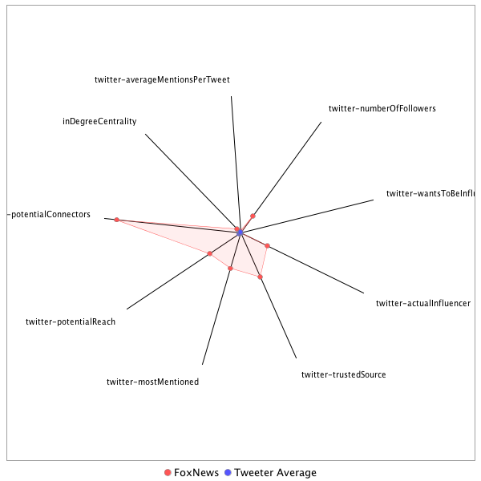

This tweeter has been identified as an influencer. Its target audience and hashtag and word usage are analyzed below.
Basic Statistics
Number of direct followers 1.50956e+07 The peak number of followers that the tweeter had during any time period. Number of retweeters 179 Number of agents that retweeted the key influencer. Number of secondary followers 195789520 The sum of the followers of those who retweeted the key influencer.
Measure Values of Other Influencers node versus Tweeter Average
This compares the measure values of the key influencer with the average values across all tweeters. For each measure line, the center-point means zero and the end-point means the maximum score across all tweeters.

Where was the influencer?
The agent is not recorded as being in any locations. Either he tweeted without geo-tags or we have no information about the tweets he sent.
The agent and retweeters were in 60 different locations.

What hashtags did the influencer use?
This displays the top ranked hashtags that the influencer and its retweeters used.
Rank hashtag Count 1 BREAKING 644 2 Comey 511 3 Trump 456 4 Russia 451 5 AHCA 303 6 mtal 286 7 ISIS 268 8 ParisAgreement 265 9 Manchester 229 10 adopt 220 11 ComeyHearing 213 12 ge2017 186 13 GA06 184 14 Qatar 179 15 Iran 178 16 AdoptDontShop 170 17 dog 169 18 CNNsotu 165 19 Syria 164 20 fox5dc 149 21 ComeyDay 139 22 LondonBridge 133 23 VAGov 127 24 worldreligiontour 124 25 JamesComey 115 26 SpecialReport 112 27 ComeyTestimony 108 28 CongressionalBaseballGame 104 29 London 104 30 MemorialDay 104 31 cat 103 32 NYC 101 33 potusabroad 101 34 China 96 35 cbntrumptravels 96 36 ComeyFiring 92 37 covfefe 92 38 rescue 88 39 NorthKorea 86 40 Israel 81 41 Obamacare 81 42 Afghanistan 79 43 foster 79 44 ParisAccord 78 45 Alexandria 76 46 Nats 76 47 SessionsHearing 76 48 GrenfellTower 74 49 RiyadhSummit 73 50 spellingbee 72 51 FBIDirector 70 52 alexandriashooting 70 53 fakenews 69 54 DPRK 67 55 txlege 67 56 DC 66 57 Tillerson 65 58 FBI 63 59 NATO 63 60 SaudiArabia 63 61 TheBachelorette 63 62 SCOTUS 62 63 tcot 61 64 CATS 59 65 FoxNews 59 66 MAGA 59 67 trumprussia 58 68 climatechange 56 69 42faith 55 70 MTpol 54 71 ManchesterBombing 54 72 Venezuela 54 73 bbcelection 54 74 BoroughMarket 53 75 Sessions 51 76 AFP 49 77 Turkey 49 78 dogs 49 79 Saudi 48 80 FOIA 47 81 manchesterattack 47 82 Iraq 46 83 RockTheRed 46 84 TBT 46 85 Caps 44 86 FF 44 87 FarewellOldChum 44 88 US 43 89 Putin 42 90 sallyyates 42 91 TimesSquare 41 92 fnr 41 93 ACA 40 94 CA 40 95 ParisClimateDeal 40 96 SecDef 40 97 TrumpCare 40 98 LondonAttacks 38 99 ManchesterArena 38 100 Tucker 38
Tweet List
This displays all of the tweets of the influencer ordered from earliest to latest. Click on a tweet to see its status in Twitter.
Number Tweet ID Date Message 1 862377081480421376 2017-05-10 14:41:33-04 TONIGHT, 6p ET: @BretBaier talks to @SpeakerRyan following Comey firing https://t.co/hXePNtD7lD https://t.co/Ir7lx0YhnL 2 861777623608942592 2017-05-08 22:59:31-04 Krauthammer Slams 'Condescending' #Obama: 'Good Riddance, Mr. President' | Read more: https://t.co/NgsRUbqHdx https://t.co/iWgfjRqBjD 3 860213323605966848 2017-05-04 15:23:32-04 .@POTUS: "[I've] only been a politician for a short period of time. How am I doing? Am I doing okay? I'm president. Hey, I'm president!" https://t.co/PawbJVDWFv 4 860158969293283329 2017-05-04 11:47:33-04 .@POTUS: "No American should be forced to choose between the dictates of the federal govt & the tenets of their faith." #nationaldayofprayer https://t.co/nD2i6QlgDQ 5 859778575054098432 2017-05-03 10:36:00-04 FBI Director Comey: "I don't have authorization from the department to confirm any of the investigations they've authorized." https://t.co/SmeRH6ZStb 6 863907858752163842 2017-05-14 20:04:18-04 BREAKING: North Korea says ballistic missile it tested earlier Sunday can carry a nuclear warhead 7 863418541504057344 2017-05-13 11:39:56-04 .@POTUS: "In America, we don't worship government. We worship God." https://t.co/DqKnHKaseP https://t.co/zlbi5PEsDv 8 863121732953133060 2017-05-12 16:00:31-04 Cyber attack spreads across 74 countries; some UK hospitals crippled https://t.co/SsyEUlZHu3 9 863095392874840064 2017-05-12 14:15:51-04 AG Sessions: "I want to thank every law enforcement officer in America... We honor your service." https://t.co/ucURDN7Bxo 10 863086182816677889 2017-05-12 13:39:16-04 HR McMaster on ISIS strategy: "[@POTUS] doesn't want to telegraph what he's doing tactically day to day." https://t.co/gltfzGjwrX https://t.co/X9nxucpTfo 11 863063983955247105 2017-05-12 12:11:03-04 New Poll Finds Approval for GOP Health Care Bill at 21 Percent https://t.co/WKILsELfab 12 863019443101855745 2017-05-12 09:14:04-04 Breaking News: There are reports of an active shooter situation in Kirkersville, Ohio. https://t.co/M2dzwtIT4e 13 862746632378568705 2017-05-11 15:10:00-04 Trump: Comey a 'grandstander,' 'showboat' https://t.co/X0Z11uLT0u https://t.co/wGcHTzrljc 14 862738656762580992 2017-05-11 14:38:19-04 .@SarahHuckabee: "He fired him because he was not fit to do the job. It's that simple. This shouldn't be a complicated process." https://t.co/zJDmvxJDCw 15 862676262841716738 2017-05-11 10:30:23-04 Director of National Intelligence Dan Coats: “North Korea is an increasingly grave national security threat to the United States.” https://t.co/CDv3Vw6vAD 16 862423508638461954 2017-05-10 17:46:02-04 TONIGHT: @BretBaier Talks to @SpeakerRyan Following Comey Firing - Tune in at 6p ET on Fox News Channel! https://t.co/hi0bDCmxBh 17 862422782600257536 2017-05-10 17:43:09-04 .@PatrickBuchanan: "I'm delighted @POTUS met with the Russians... You have to do it. That's the world." #FoxNewsSpecialists https://t.co/RxFEcqkuNi 18 862374853743190016 2017-05-10 14:32:41-04 Do you agree with @SarahHuckabee? https://t.co/LNj6iTtTCM 19 862334706708303875 2017-05-10 11:53:10-04 Daughter of cop killed in line of duty gets prom surprise https://t.co/RcETwMCKCx 20 862332502819561472 2017-05-10 11:44:24-04 Reporter: "Why did you fire Director Comey?" @POTUS: "Because he wasn't doing a good job." https://t.co/8CudX3I6kJ 21 862099962498297857 2017-05-09 20:20:22-04 .@SenSanders responded to @POTUS's firing of @FBI Director Comey. https://t.co/Q9wdOUQbYS https://t.co/i9KgP7dmXW 22 862095092722659328 2017-05-09 20:01:01-04 Trump fires Comey: Reaction to FBI Director's termination https://t.co/Qy0NRSHcjM via @foxnewspolitics https://t.co/4KdexYDN94 23 862068621538803716 2017-05-09 18:15:50-04 Herridge on info @WhiteHouse released on dismissal of James Comey: "He colored outside the lines. He had brought disrepute on to the bureau" https://t.co/HFoG9Mnxy5 24 861655614144958464 2017-05-08 14:54:41-04 Clapper: The Russians used cyber operations against both political parties. https://t.co/wBXgXBR7u5 https://t.co/smoEwX28w4 25 861573726827098112 2017-05-08 09:29:18-04 “This law effectively bans sanctuary cities in the state of Texas.” GregAbbott_TX signed a bill that prohibits sanctuary cities & counties. https://t.co/0K2HnJOxxy 26 860615086427197440 2017-05-05 18:00:00-04 Coming up at 6p ET on #SpecialReport: Watch @BretBaier's exclusive interview with Australian Prime Minister Malcolm Turnbull. https://t.co/3vOggBvlvl 27 860214533423583234 2017-05-04 15:28:21-04 .@SpeakerRyan: "Thank you, Mr. President. Thank you. Thank you for your leadership." https://t.co/cqXgjo5Fhn 28 860156935999541249 2017-05-04 11:39:29-04 .@VP: "Our president is a believer. He loves his family and he loves his country with an unshakable faith in God and the American people." https://t.co/eXryT7YboQ 29 860111860758171649 2017-05-04 08:40:22-04 BREAKING: US Air Force jets intercept Russian bombers, fighter jets near Alaska https://t.co/QBl7Z13C5H 30 859890305885130752 2017-05-03 17:59:59-04 F/A-18 Hornets soared past the USS Carl Vinson as the @USNavy patrolled waters off the Korean Peninsula with S. Korean Navy on Wednesday. https://t.co/HRSDbNWNKc 31 859824095097217024 2017-05-03 13:36:53-04 FBI Director James Comey defended his decision to announce his reopened probe into #HillaryClinton's private email. https://t.co/boTL6PT8Tg https://t.co/PxKGR9AtNn 32 859800561234956288 2017-05-03 12:03:22-04 FBI Director Comey: "A big part of what the Russians did was pushing out false information." https://t.co/mteW6cFoQ7 https://t.co/qicvDs2OYy 33 859714681124139008 2017-05-03 06:22:07-04 NATO convoy targeted in Kabul suicide bombing, at least 8 dead https://t.co/othJqfxlFg via @holliesmckay 34 859480349843365893 2017-05-02 14:50:58-04 #HillaryClinton blames Comey, WikiLeaks for election loss to #DonaldTrump https://t.co/aumjtTQAnK https://t.co/A4Tfr7ifJO 35 859418991886045184 2017-05-02 10:47:09-04 Trump administration loosens Obama-era school lunch requirements https://t.co/yRlMrJgVGk 36 859126716803014656 2017-05-01 15:25:45-04 Breaking News: @JonScottFNC: University confirms suspect is in custody, no word yet on possible motive. #Austin https://t.co/1Aca6plsnp 37 859103597254017026 2017-05-01 13:53:53-04 Reports: Dallas firefighter shot; search underway for armed suspect. https://t.co/O2nFFAfwaQ https://t.co/OxWYRUKFXn 38 862089051788238848 2017-05-09 19:37:01-04 Why Comey was fired: DOJ rips handling of Clinton case in ouster https://t.co/pmu6WM3gB3 via @JuddBerger https://t.co/lHvRRNelHg 39 863836898111913984 2017-05-14 15:22:20-04 Interviewing for FBI Director. https://t.co/hfKk6DpI9L https://t.co/du38n3NyB2 40 863174792777695232 2017-05-12 19:31:22-04 Wallace: "Nobody in Washington is talking about the legislative agenda. Everybody is talking about...[@POTUS'] increasingly puzzling acts." https://t.co/rdLGgUZJ5A 41 862748516967473157 2017-05-11 15:17:30-04 Trump signs executive order launching voter fraud commission- via @brookefoxnews @kristincbrown https://t.co/50rLMgBwD2 42 862810331378106368 2017-05-11 19:23:07-04 Ron Hosko on Comey firing: "I don't see [@POTUS] at war with the @FBI." #TheStory https://t.co/ub35Fwk6PQ 43 862776829584723968 2017-05-11 17:10:00-04 Conway on Anderson Cooper's Eye-Roll: I face sexism often in TV interviews https://t.co/v2MEUvufZR https://t.co/IDqH8hh9fA 44 862322910630903808 2017-05-10 11:06:17-04 .@VP: "[@POTUS] took the action necessary to remove Director Comey." https://t.co/NEwRWAoeUO 45 860708200269488128 2017-05-06 00:10:00-04 Obama White House counsel part of early talks on Clinton email release, notes show https://t.co/XRC6VEIlrV https://t.co/yYsYyvhLZO 46 860205570741194752 2017-05-04 14:52:44-04 .@Richardafowler: "I don't know if this bill in its current form will make it to the end-zone." https://t.co/C27m2jKdax 47 860192834422542336 2017-05-04 14:02:07-04 Moments ago, President @realDonaldTrump tweeted about ObamaCare, stating that it is "dead." https://t.co/zGd1FnML56 48 859805675865559040 2017-05-03 12:23:42-04 Comey says Huma Abedin had a regular practice of forwarding Hillary Clinton’s emails to Anthony Weiner; some contained classified info. https://t.co/e9mZIokthh 49 859201183348600832 2017-05-01 20:21:39-04 Six years ago today, Usama bin Laden was killed - and America celebrated. https://t.co/UziCBLZHlA 50 859094760841203712 2017-05-01 13:18:46-04 DEVELOPING: Reports: Dallas first responder shot; police look for armed assailant. https://t.co/94r0f9M3id 51 859093185037037568 2017-05-01 13:12:31-04 Author Reveals How CIA's Enhanced Interrogations Helped Find Bin Laden https://t.co/PTpJdfvEnM 52 862106044419514369 2017-05-09 20:44:32-04 Text: @POTUS letter to James Comey https://t.co/ZlS2kYItR5 https://t.co/ax15GVk7lx 53 860199940093595648 2017-05-04 14:30:22-04 ObamaCare replacement bill approved in House https://t.co/wWF6UXzYtA 54 859783141115830274 2017-05-03 10:54:09-04 Comey explains reason for announcing Clinton email investigation days before election: “Concealing in my view would be catastrophic.” https://t.co/c9j80Y1B0f 55 863926293221576704 2017-05-14 21:17:33-04 MORE: North Korea says it launched missile that can carry nuclear warhead https://t.co/B1ifvF2oCS https://t.co/FJohBDo3ch 56 863109918928142336 2017-05-12 15:13:35-04 SATURDAY: @JudgeJeanine goes one-on-one with @POTUS - Tune in at 9p ET on Fox News Channel! https://t.co/RCo53lPjT9 https://t.co/UJUWsSC3J6 57 862142593752211457 2017-05-09 23:09:46-04 .@SenSchumer called for a "fearless, independent special prosecutor" to look into Russia-Trump ties. More: https://t.co/SF0bhV7ZGs https://t.co/AZcXLjDFIP 58 859772849963315200 2017-05-03 10:13:15-04 Watch Live: FBI Director James Comey testifies at the Senate Judiciary Committee hearing on "Oversight of the FBI." https://t.co/mteW6cFoQ7 https://t.co/IAKiaogLal 59 859408428480987136 2017-05-02 10:05:11-04 Texas tornado: Church parishioners thank 'grace of God' for saving their lives https://t.co/trG9cZphLg 60 863710990168412161 2017-05-14 07:02:01-04 White House: North Korea has been 'flagrant menace for far too long' https://t.co/E7PHHjenIw via @foxnewspolitics https://t.co/zAT4wMvOzl 61 861214118291718144 2017-05-07 09:40:21-04 North Korea detains another American over alleged hostile acts https://t.co/8CWqNAHzXo https://t.co/ZX1tmYJJCX 62 859904881607528448 2017-05-03 18:57:54-04 .@WhiteHouse reacts to @StephenAtHome's controversial @POTUS joke https://t.co/U2crhHI489 63 862059211299147776 2017-05-09 17:38:26-04 Pentagon announces plan to arm Kurds in Syria, over Turkish objections https://t.co/75VYa8RTx3 via @LucasFoxNews https://t.co/4dV1cDgzTP 64 862070857425879040 2017-05-09 18:24:43-04 Text: @POTUS letter to James Comey https://t.co/ZlS2kYItR5 https://t.co/wPgJs3QGbH 65 861354415097339904 2017-05-07 18:57:50-04 ISIS chief in Afghanistan was killed during April raid, US military says https://t.co/RSP0OlrdN9 #FOXNewsWorld 66 861734041162141696 2017-05-08 20:06:20-04 .@marthamaccallum signed off Monday with a tribute to the Navy SEAL killed in Somalia. #TheStory https://t.co/DFntQekURs https://t.co/yL95f54WKk 67 861821787511832576 2017-05-09 01:55:00-04 Minnesota measles outbreak: Officials say Somali families 'targeted with misinformation' https://t.co/bYLAPPQKhe via @SChamberlainFOX https://t.co/le6kTD68EY 68 862395410039676929 2017-05-10 15:54:22-04 Putin before hockey game: 'We have nothing to do with' Comey firing https://t.co/fNFQOFvK5m 69 859142137585250304 2017-05-01 16:27:02-04 .@MikeKellyPA on healthcare bill: "I don't think we can put something together that is going to keep everybody happy." https://t.co/ZgQLrjoMRL 70 859578650638688256 2017-05-02 21:21:35-04 .@jessebwatters asks about House break: When does it reach the level where the White House says...stay in Washington & start doing something https://t.co/X9N3JV309F 71 862330220287844352 2017-05-10 11:35:20-04 .@SimonWDC: "[Lavrov's] laughing at us. The Russians are mocking us in our own government buildings." https://t.co/cP0xPaI4s6 72 861596114457198592 2017-05-08 10:58:16-04 Watch: @CondoleezzaRice discusses North Korea, the state of U.S.-Russia relations, President #Trump and more with @BillHemmer. https://t.co/yqrWtczIR1 73 860297105851772928 2017-05-04 20:56:28-04 Join us for a Facebook Live with @BillHemmer and @CondoleezzaRice on https://t.co/2GlcPPtZIT, Friday at 11:15a ET. Send us your questions! https://t.co/IBrqHLseGI 74 859187936494985216 2017-05-01 19:29:01-04 Democrats still search for answers after @HillaryClinton loss; @edhenry reports. #TheStory https://t.co/3YzzoKEHuE 75 862462582585647104 2017-05-10 20:21:18-04 .@JoeConchaTV: "No one ever offers when a good time would have been to fire Jim Comey...@HillaryClinton probably would have done it day one" https://t.co/Xgh0qU0cbk 76 863402149992071170 2017-05-13 10:34:48-04 .@POTUS: "When I say something, I mean it." https://t.co/X03AbRQSzK 77 862714313500315648 2017-05-11 13:01:35-04 WATCH Senate Intel Committee Chairman and Vice Chair on meeting with deputy AG after FBI Dir. Comey's firing: https://t.co/Ad5cVAUTkH 78 863703978491727876 2017-05-14 06:34:09-04 Mother's Day: Is your husband your child or your partner? https://t.co/WaV5QaeACY via @FoxNewsOpinion https://t.co/C0slrp8Koz 79 860256559997136896 2017-05-04 18:15:21-04 First foreign trip - @POTUS to visit Saudi Arabia, Israel, and the Vatican; @JamesRosenTV reports. #SpecialReport https://t.co/6yrhADINN2 80 862523913116336128 2017-05-11 00:25:00-04 Aetna to Completely Pull Out of ObamaCare Exchanges by 2018 https://t.co/ef6ArF3qTh via @FoxBusiness https://t.co/6mW4DucbgP 81 864248142841004033 2017-05-15 18:36:28-04 President Trump reportedly revealed classified info about ISIS to Russians. Read more: https://t.co/17qRR9evhH https://t.co/4Cyzy5PO75 82 864812843438309376 2017-05-17 08:00:23-04 BREAKING: Russian President Vladimir Putin says his country is willing to give the US records of @POTUS' talks with Foreign Minister Lavrov. https://t.co/GYfd1M8Hs0 83 864256687976443905 2017-05-15 19:10:26-04 Natl Security Adviser McMaster on report @POTUS revealed classified info to Russia: "At no time were intel sources or methods discussed." 84 863510136886788096 2017-05-13 17:43:54-04 BREAKING NEWS: North Korea fired on Sunday an unidentified projectile from a region near its west coast, South Korea's military said. 85 860265887559016448 2017-05-04 18:52:25-04 Pentagon eyes Iran-North Korea military connection https://t.co/NdbbaD9lsx via @LucasFoxNews @JenGriffinFNC https://t.co/KLQsIQC6sK 86 864257337787375617 2017-05-15 19:13:01-04 McMaster on report pres revealed classified info to Russia: "@POTUS did not disclose any military ops that were not already publicly known." https://t.co/TE2xghYGhZ 87 864257662497820673 2017-05-15 19:14:18-04 McMaster on report @POTUS revealed classified info to Russia: "I was in the room. It didn't happen." https://t.co/hH1A0ED7cX 88 864264248725086208 2017-05-15 19:40:28-04 .@SenSasse: A lot of the media will probably hyperventilate really quickly & lose a distinction...between illegality & imprudence. #TheStory https://t.co/bAuSLTv3dh 89 864258321724977153 2017-05-15 19:16:55-04 .@johnrobertsFox: "If [McMaster & Powell] thought what @POTUS was doing was a really, really bad idea, they probably would have spoken up." https://t.co/ZSA5gF4TL9 90 863512613984116736 2017-05-13 17:53:45-04 MORE: North Korea fires unidentified projectile off its coast, South Korea's military reports https://t.co/IJHysm6CPc 91 863171917062078464 2017-05-12 19:19:56-04 Wallace on @PressSec refusal to comment on possible White House recordings: "That is what the used to call in Watergate a non-denial denial" https://t.co/1ZtUDCKVTK 92 860898349188337664 2017-05-06 12:45:35-04 TOMORROW on @FoxNewsSunday, Chris Wallace goes one-on-one with WH Chief of Staff @Reince Priebus - Tune in at 2p & 10p ET on Fox News! https://t.co/bISJmATdBb 93 859574715190583296 2017-05-02 21:05:56-04 .@MikeEmanuelFox on budget deal: "There's something for everyone to say they like, something for everyone to say they hate." #TheFive https://t.co/l2t9Cd3fhe 94 859242541249581056 2017-05-01 23:06:00-04 Trump mum on North Korea red line, says: 'I act if I have to act' https://t.co/oUazHyzyyX https://t.co/N7BGknvhM9 95 864676077452627968 2017-05-16 22:56:56-04 .@SebGorka: "There are people that unfortunately we've inherited that don't recognize who the president is." #Hannity https://t.co/jbJY6bBm7v 96 864532535258337282 2017-05-16 13:26:33-04 .@POTUS: "We had a very, very successful meeting with the foreign minister of Russia. Our fight is against ISIS." https://t.co/SpNKfmG7ik 97 864530971676246016 2017-05-16 13:20:20-04 President Erdogan: "We are committed to fighting all forms of terrorism without any discrimination." https://t.co/m5RtX7gVI4 98 864512657579163649 2017-05-16 12:07:34-04 "I stand by my statement that I made yesterday. The premise of that article is false." – McMaster https://t.co/crh8WgvtaI https://t.co/iS83Fb27gz 99 864388701723533312 2017-05-16 03:55:00-04 Slain DNC staffer had contact with WikiLeaks, investigator says https://t.co/UbD59fNfUK https://t.co/ie7dkVSTb4 100 864682436516614146 2017-05-16 23:22:12-04 .@jasoninthehouse: "The system we have in place has worked for a couple hundred years and I think we ought to give that the first shot." https://t.co/J0Sa96DxdE 101 864679725339258880 2017-05-16 23:11:26-04 .@KarlRove" "There's a dual standard, let's not kid ourselves: One standard if you're a Democrat, another standard if you're a Republican." https://t.co/T8H2NcyO5d 102 864513685968084992 2017-05-16 12:11:39-04 McMaster: It's incumbent on all of us to take a look at how this leak and other breaches have occurred. https://t.co/K7fJcBC0kq 103 864513131015544833 2017-05-16 12:09:26-04 National Security Adviser H.R. McMaster: “The president in no way compromised any sources or methods in the course of this conversation.” https://t.co/5QkpG9ggqB 104 864146626255912961 2017-05-15 11:53:05-04 "President Trump's highest priority is the safety and security of the American people." - @VP Mike Pence https://t.co/Tzl7qdXUNg 105 865185973503709184 2017-05-18 08:43:05-04 Breaking News: Former Fox News chairman and CEO Roger Ailes has died, his family announced. https://t.co/AksPdNSZaI 106 867053204076457986 2017-05-23 12:22:47-04 U.K. Police: We've arrested 23-year-old man in connection with the Manchester attack and carried out two warrants. 107 867046136435138562 2017-05-23 11:54:42-04 Breaking: Manchester terror attack suspect identified as Salman Abedi https://t.co/z6QsFJ0wqX https://t.co/PUOFI0Rfwd 108 866310094094348292 2017-05-21 11:09:56-04 .@POTUS: Above all, America seeks peace, not war. Muslim nations must be willing to take on the burden if we are going to defeat terrorism. https://t.co/p4HStT7a4t 109 866019823435763712 2017-05-20 15:56:30-04 .@VP: "We are going to propose the largest increase in defense spending since the days of Ronald Reagan." https://t.co/J5EyEvlH2q 110 865921712252043264 2017-05-20 09:26:38-04 Today, on this Armed Forces Day, we honor and thank all the members of our Armed Forces, past and present. #ProudAmerican https://t.co/pCESJI2LjC 111 865633911061176321 2017-05-19 14:23:01-04 .@POTUS's first foreign trip. https://t.co/vo2D9eDutb https://t.co/Ya4XPVPGO8 112 865733698259439616 2017-05-19 20:59:32-04 .@DevinNunes: @BarackObama Admin Ignored Warnings About Russia #SpecialReport https://t.co/fZ8YAsSSLe 113 864995698135097344 2017-05-17 20:06:59-04 .@jasoninthehouse on Fmr. FBI Director Mueller: "He is as good as it gets. His credentials are impeccable." #Tucker https://t.co/B0RljIiiFU 114 867322705539768320 2017-05-24 06:13:41-04 Manchester police make 3 more arrests, as UK terror level remains at critical https://t.co/erS6QqwfDN 115 867220964093775872 2017-05-23 23:29:24-04 People around the world are mourning the victims of Monday night's attack at a concert in Manchester, England. https://t.co/cEGBWk7r34 https://t.co/Sne3zISMGN 116 866837231360671744 2017-05-22 22:04:35-04 Official: "We are currently treating this as a terrorist incident until we have further information." https://t.co/t4cJUUl6IQ https://t.co/DeyuiDW79W 117 866833575014010881 2017-05-22 21:50:03-04 WATCH LIVE: Manchester police hold press conference on deadly explosion at Ariana Grande concert https://t.co/wV41d9lQ1q 118 866827129425731584 2017-05-22 21:24:27-04 Ariana Grande concert blast: 'Everybody was screaming,' witness says https://t.co/692xKNv3lx 119 866823775752306688 2017-05-22 21:11:07-04 .@RichardGrenell: "We, as Americans, need to be vigilant; we need to always be ready." https://t.co/fjy9740Bee 120 866819457464897540 2017-05-22 20:53:58-04 Ariana Grande concert explosion: What we know https://t.co/J1jA7YSKWz 121 866629487882010624 2017-05-22 08:19:05-04 .@POTUS: "Most importantly, the United States & Israel can declare w/ one voice that Iran must never be allowed to posses a nuclear weapon." https://t.co/UqfM0rmt6l 122 866082362760642560 2017-05-20 20:05:00-04 Myron Rolle, former NFL safety and Rhodes Scholar, gets degree in neurosurgery https://t.co/tM0mMElGV1 https://t.co/buX8pjzUF3 123 865581615522734080 2017-05-19 10:55:13-04 .@POTUS's foreign trip. https://t.co/vo2D9eV5RL https://t.co/J7iiuAW4Yi 124 865583076612612096 2017-05-19 11:01:01-04 Moments ago, President @realDonaldTrump tweeted about his first foreign trip as President of the United States. https://t.co/vo2D9eDutb https://t.co/fuCNQFxrWl 125 865586878484955136 2017-05-19 11:16:08-04 .@RepCummings: "This is about the fight for the soul of our democracy. We cannot afford to lose this one." https://t.co/FI9NeWVjrE 126 866791461500669952 2017-05-22 19:02:43-04 DEADLY CONCERT BLAST: ‘Number of confirmed fatalities’ at Ariana Grande show in Manchester, England https://t.co/g0FkMpJe0Y https://t.co/gw8qpFFlQD 127 866410356922560512 2017-05-21 17:48:20-04 Priebus to make early return to Washington amid new questions about his job status https://t.co/7AIInsj7T1 via @FoxBusiness 128 867033883405160448 2017-05-23 11:06:01-04 Brennan 'unaware' of any efforts by Trump to push back against probes into Russian meddling in 2016 election https://t.co/eQ4VIqNPt9 https://t.co/uPX0kTxFxS 129 866302181015564289 2017-05-21 10:38:29-04 .@POTUS: "Our vision is one of peace, security, and prosperity in this region and all throughout the world." https://t.co/Squ0OxwmrQ 130 865640394184212481 2017-05-19 14:48:47-04 .@Bre_payton: "Most Americans think that @POTUS is a legitimate president." https://t.co/gIdE1FDW61 131 865277141432365056 2017-05-18 14:45:21-04 Weekly jobless claims fall for the third straight week. https://t.co/zEXmAq5fSg 132 864978669474897925 2017-05-17 18:59:19-04 Who is Robert Mueller? Ex-FBI chief to oversee Russia probe as special counsel https://t.co/eaHoRPVhZk 133 867120508965400578 2017-05-23 16:50:14-04 .@theresa_may on raising threat level: Assessment is not only is an attack remains highly likely, but that a further attack may be imminent. https://t.co/J6Bth6dtxU 134 866906873793921024 2017-05-23 02:41:19-04 Ariana Grande Concert Explosion: UK police say attacker detonated IED, death toll at 22 https://t.co/bRrc8yr0kJ 135 866997292468850688 2017-05-23 08:40:37-04 .@POTUS: "I had a meeting this morning with President Abbas and can tell you that the Palestinians are ready to reach for peace." https://t.co/HtvnZVgVV2 136 866793351764353024 2017-05-22 19:10:13-04 Ariana Grande concert explosions: 'Number of confirmed fatalities,' police say (Video Credit: @hannawwh) https://t.co/H9UTj1dLfy 137 866657070833172480 2017-05-22 10:08:42-04 VIDEO: Earlier today, @POTUS visited the Western Wall in Israel. https://t.co/EsCZsE76Ei 138 866625280755892225 2017-05-22 08:02:22-04 “Mr. President, we’re happy to see that…America is back again.” – President Rivlin says Israel will do everything to help U.S. defeat ISIS https://t.co/LlaCEBTQ5X 139 866615685266288641 2017-05-22 07:24:14-04 During his trip to #Israel, President #DonaldTrump said, “There’s a great feeling for peace throughout the Middle East.” https://t.co/3qykiO9ViV 140 866394005457616896 2017-05-21 16:43:22-04 WATCH: President #Trump calls on Muslim leaders to "drive out" terrorists and extremists. https://t.co/CEOtvjvXoF https://t.co/ygO6swvXnk 141 866330124660207616 2017-05-21 12:29:32-04 #Tillerson: Focus of Saudi visit is ending terrorism, essential to improving human rights https://t.co/lw2p9F0uOd 142 866308809995689986 2017-05-21 11:04:50-04 .@POTUS: America is committed to adjusting our strategies to meet evolving threats...We will discard those strategies that have not worked. https://t.co/I4hHqlH447 143 866312538035699712 2017-05-21 11:19:39-04 .@POTUS: "If you choose the path of terror, your life will be empty, your life will be brief, and your soul will be fully condemned." https://t.co/n4LCNoyohM 144 866314400730419200 2017-05-21 11:27:03-04 .@VP: "The most important job I will ever hold is that of husband and father." https://t.co/4Ql0YOjno0 145 866265813333966848 2017-05-21 08:13:58-04 North Korea launches another mid-range missile, officials say https://t.co/8kZhyZ00J2 146 866263990946734080 2017-05-21 08:06:44-04 President #Trump to call for 'stamping out extremism' in speech to Muslim leaders https://t.co/0kvr6NNb0B 147 865680985802899456 2017-05-19 17:30:05-04 Tone of news coverage - U.S. news outlets. https://t.co/fpEno0ssnm 148 865609028398874624 2017-05-19 12:44:09-04 Venezuela general orders snipers to prepare for clash with protesters https://t.co/1EXDmFk6wc @AndrewOReilly84 149 865488850092564480 2017-05-19 04:46:36-04 Despite US call to isolate North Korea, ferry service to Russia begins https://t.co/0Xk5Wh1hiF 150 865405400929062912 2017-05-18 23:15:00-04 ICE arrests under Trump jump 40 percent as border crossings drop https://t.co/F4ANzVwTe1 https://t.co/px7EpwYwn0 151 865308574406332416 2017-05-18 16:50:15-04 .@BretBaier: @POTUS Seemed 'Undeterred' at Lunch With Reporters https://t.co/b4wtKmAQqw 152 865292264318304257 2017-05-18 15:45:26-04 Graham: I Believe Clinton Operatives Emailed Justice Dept During Email Probe https://t.co/ODjSOm9rJH 153 865285957062336512 2017-05-18 15:20:23-04 .@POTUS: Former CT Senator @JoeLieberman is top candidate for FBI Director. https://t.co/rA0gpUjHU4 154 865258751363735552 2017-05-18 13:32:16-04 BREAKING NEWS: U.S. official says U.S. airstrike hits pro-Assad forces in Syria. https://t.co/TSnl4pNhQQ 155 865242587044642816 2017-05-18 12:28:02-04 Witness: Car was driving the wrong way before it hit pedestrians in #TimesSquare. https://t.co/MjUKohB4G0 https://t.co/oHomFO2zPz 156 865239697827782656 2017-05-18 12:16:33-04 BREAKING NEWS: Several people hurt after car drives onto sidewalk in Times Square. https://t.co/acrwORJNIc 157 864995001599655936 2017-05-17 20:04:13-04 TUNE IN: @jasoninthehouse joins @TuckerCarlson NOW on @FoxNews Channel. #Tucker https://t.co/jJSG72Lw2v 158 864986164910055424 2017-05-17 19:29:07-04 JUST IN: President #Trump released a statement regarding ex-FBI chief Mueller's appointment to oversee Russia probe as special counsel. https://t.co/QwAmLpAtkO 159 864967834748633089 2017-05-17 18:16:16-04 Breaking News: Former @FBI head Robert Mueller named to oversee Russia election probe. Read more: https://t.co/PzSK2AVy79 https://t.co/ZCkozWELsm 160 864944736959942656 2017-05-17 16:44:29-04 .@POTUS takes on media during Coast Guard commencement speech https://t.co/9OcHTRrE6n https://t.co/d9zqnPQRUI 161 867670603456684032 2017-05-25 05:16:07-04 Greg Gianforte: Fox News team witnesses GOP House candidate 'body slam' reporter https://t.co/wYEZqiF1aI https://t.co/mmx2Z3d0mv 162 868846300070072320 2017-05-28 11:07:54-04 On @WattersWorld, @EricTrump said Democrats are promoting a false narrative designed to take down his father's presidency. https://t.co/JhLKxnozZf 163 868216036520230913 2017-05-26 17:23:28-04 Former CIA Officer: NYT May Have Compromised Terror Investigation To Hurt Trump https://t.co/sGD7Q3jNFS 164 868867040139980800 2017-05-28 12:30:19-04 It is the 30th edition of #RollingThunder today! Tune in for a live report on Fox News Channel! #ProudAmerican https://t.co/YDC4sStA0U 165 868872187058335744 2017-05-28 12:50:46-04 #RollingThunder holds 30th annual "Ride For Freedom." #ProudAmerican https://t.co/gohvRjsIcJ 166 868970344597606401 2017-05-28 19:20:49-04 Navy SEAL team member dies after parachute fails during Fleet Week demonstration https://t.co/HZ6g6BeiTT #FOXNewsUS 167 868230864798339072 2017-05-26 18:22:23-04 Manchester terror - crime scene remains, raids continue. #SpecialReport https://t.co/RlAqeoYiLK 168 867817689024274433 2017-05-25 15:00:34-04 ISIS rigged explosives to home where 100 civilians died in US-led airstrike, military says https://t.co/VxviLfWClD 169 867586020065386497 2017-05-24 23:40:00-04 Manchester terror attack: UK officials 'furious' over investigation leaks from US https://t.co/imijcJBQn1 via @SChamberlainFOX https://t.co/g4EGnBLhk3 170 867437815709265925 2017-05-24 13:51:06-04 BREAKING NEWS: Ramadan Abedi, father of Manchester bomber Salman Abedi, arrested in Tripoli. https://t.co/dH3MdBlq6x 171 867569211077472256 2017-05-24 22:33:13-04 Fox News team witnesses GOP House candidate Greg Gianforte 'body slam' reporter https://t.co/RsYebYvf8D via @aacuna1 172 868160287362478080 2017-05-26 13:41:56-04 Fox News Poll: @POTUS's approval. https://t.co/rJani1B9Ro 173 869262678455459841 2017-05-29 14:42:27-04 Protesters march against President Nicolas Maduro in Venezuela https://t.co/L43ujZ9OI0 https://t.co/UEfLowKE93 174 867838160247508992 2017-05-25 16:21:55-04 Do you agree with @SecretaryCarson? https://t.co/jCmvzxDi7M https://t.co/0n7JB1BB91 175 868526743270948865 2017-05-27 13:58:06-04 BREAKING NEWS: Jim Bunning, the MLB Hall of Fame pitcher who went on to become a US senator representing Kentucky, died Friday. He was 85. https://t.co/J3EPTfFmIc 176 868316331086458883 2017-05-27 00:02:00-04 Is North Korea's EMP threat real or 'something out of a James Bond movie'? https://t.co/uOhkHS4PjG via @dougmckelway 177 869652364814307328 2017-05-30 16:30:55-04 JUST IN: Missile interceptor lifts off at Vandenberg Air Force Base in first-of-its-kind test to down ICBM. https://t.co/6PukJ6mfOH https://t.co/oTD5fAZY0k 178 869878715978854400 2017-05-31 07:30:22-04 .@realDonaldTrump tweets 'covfefe,' causes Twitter frenzy https://t.co/CwIWb9843N #covfefe https://t.co/vXRCo8pfES 179 869718615964176385 2017-05-30 20:54:11-04 Head of US Missile Agency said he is "incredibly proud of the warfighters who executed" test of an ICBM interceptor. https://t.co/xf4JrzMZ6u https://t.co/wkgQm7xis7 180 869580743613218817 2017-05-30 11:46:19-04 Ariana Grande to hold benefit concert for Manchester attack victims on Sunday https://t.co/gVgLCgLLye 181 869429588983599104 2017-05-30 01:45:41-04 Manuel Noriega, former Panama dictator, dead at 83- AP reports https://t.co/usbYKHLouw 182 869297312001961984 2017-05-29 17:00:04-04 This Memorial Day, we honor the men and women who gave their lives fighting for our great country. https://t.co/uuPuYDsLKE 183 868552263605694464 2017-05-27 15:39:31-04 BREAKING: Music legend Gregg Allman has died, publicist says 184 868481985966223364 2017-05-27 11:00:15-04 .@FLOTUS: "It is because of your selfless commitment that we enjoy the freedoms we have today." https://t.co/qLHh8cXZuR 185 868483721921515520 2017-05-27 11:07:09-04 .@POTUS to military children: "America is so proud of you." https://t.co/juNIHW46MC 186 868296334276673536 2017-05-26 22:42:32-04 .@POTUS issued a statement on the attack on Coptic Christians in Egypt. 28 were killed while on their way to pray. https://t.co/obGrWkOwPI https://t.co/Zkidxc6HgN 187 868150070033735684 2017-05-26 13:01:20-04 BREAKING NEWS: Pentagon announces plans for 1st-ever intercept test of an intercontinental-range missile like the one NK is developing. 188 868149109177409536 2017-05-26 12:57:31-04 PHOTOS: A WWII veteran served as his niece's "something blue" on her wedding day. https://t.co/BlcyM3OXo0 #ProudAmerican https://t.co/rzCq2mDiGt 189 868132012887953408 2017-05-26 11:49:35-04 At least 28 killed in bus attack targeting Coptic Christians in Egypt. https://t.co/obGrWkOwPI https://t.co/CaYPHhHA06 190 868130313033048064 2017-05-26 11:42:50-04 . @VP tells @NavalAcademy graduates to break protocol, stand up and thank their families https://t.co/qja3i34Bzx 191 867841068045189120 2017-05-25 16:33:28-04 Navy dad surprises daughter at Georgia elementary school graduation https://t.co/qurgyTDxZg 192 868051681417637888 2017-05-26 06:30:23-04 Attack in Egypt: Gunmen reportedly open fire on bus carrying Coptic Christians in Egypt, killing at least 23 https://t.co/jT4f0UOfhi 193 867881145945423872 2017-05-25 19:12:44-04 Jared Kushner is under @FBI scrutiny, new report alleges https://t.co/ZOpAHYUPIt 194 867924014991388672 2017-05-25 22:03:05-04 Montana special House election: Tight race expected as polls close https://t.co/kQZvssxdiH 195 867833210343960576 2017-05-25 16:02:15-04 2016 defense spending - NATO allies who met 2% of GDP goal. https://t.co/mj17uRlkl0 196 867832754456723456 2017-05-25 16:00:26-04 Trump travel ban blocked by Va.-based federal appeals court https://t.co/DZCs3m4yEW 197 867802617027624961 2017-05-25 14:00:41-04 BREAKING NEWS: Manchester bomber Salman Abedi called his mother hours before the attack and said 'forgive me' https://t.co/xIYJ9RJ7fn 198 869903358584336384 2017-05-31 09:08:17-04 Trump pulling US out of Paris climate deal: Report https://t.co/SQ94RYAWvJ 199 868117531772542976 2017-05-26 10:52:03-04 .@VP: "Write your own story right now in your mind. See it and go live it. Write an historic and heroic story of service." https://t.co/7Z1slcdNx8 200 867747993260367872 2017-05-25 10:23:38-04 Soon: @POTUS to speak at NATO HQ. https://t.co/OdLMRyUSt0 201 868953392168804352 2017-05-28 18:13:27-04 BREAKING: North Korea test-fires unidentified projectile, South Korea says; Japanese government says missile may have landed in Sea of Japan 202 869625760000073728 2017-05-30 14:45:12-04 .@PressSec says President #Trump would describe his relationship with German Chancellor Angela Merkel as "fairly unbelievable." https://t.co/j8ImnPf7w2 203 868181215001661440 2017-05-26 15:05:06-04 Political correctness or blindness? Sharia supporter to give commencement address https://t.co/arervNy0x1 204 868144986218405894 2017-05-26 12:41:08-04 British police make new arrest in Manchester suicide bombing. https://t.co/vtGPHrwkXg 205 868125321010216961 2017-05-26 11:23:00-04 Steve Bannon to head Trump's Russia war room of legal 'A-Team,' street fighters and surrogates https://t.co/YLw3br07yB 206 867809019930460161 2017-05-25 14:26:08-04 .@AriFleischer: "This trip has been a shining success for @POTUS." https://t.co/ewkLCippoC 207 867666770080833537 2017-05-25 05:00:53-04 MORNING BRIEF: Fox News team witnesses Montana House candidate 'slamming reporter' https://t.co/bJefhoVw30 208 867605630432854016 2017-05-25 00:57:56-04 BREAKING: Montana GOP House candidate given citation for misdemeanor assault after incident with reporter, police say 209 869909308095569920 2017-05-31 09:31:55-04 President #Trump expected to pull out of Paris Climate Agreement. #ParisAgreement https://t.co/kHEHFKY3H0 210 869688464911941632 2017-05-30 18:54:22-04 .@krauthammer on gruesome @kathygriffin photo: "Political pornography from a D-list comedienne." GRAPHIC CONTENT: https://t.co/byjK80gYFe https://t.co/xKYZmpE5ef 211 869304856544235520 2017-05-29 17:30:03-04 Homeland's Kelly says no 'big deal' if Kushner tried back-channel network with Russia, as WH fights back https://t.co/g6lXfPhL4I https://t.co/xf0qMMLVIH 212 868254777439916032 2017-05-26 19:57:24-04 Wallace on @NATO remarks: I think most people at home are going to think, "Good on @POTUS to tell them why they shouldn't be free riders." https://t.co/nzYveEm9lY 213 868197992964206594 2017-05-26 16:11:46-04 .@VP #MikePence delivered strong words of encouragement to the @NavalAcademy graduating class of 2017 https://t.co/2Xd4Rp3mCK https://t.co/kgiW9P603R 214 868165492405669888 2017-05-26 14:02:37-04 #MemorialDay weekend - most popular destinations. https://t.co/WFXzkvUyGZ 215 868154995937386497 2017-05-26 13:20:55-04 .@RickLeventhal: "All of the victims have now been identified publicly. Nearly half of them are children or teens." #Manchester https://t.co/Gp1F5gFi2K 216 868113142106214402 2017-05-26 10:34:36-04 .@VP: "No matter what path you take, know that your Commander-in-Chief is proud of you and so am I, and every American is grateful." https://t.co/kbmjw0XCeS 217 867871666759757825 2017-05-25 18:35:04-04 Poll: Majority of Americans Think Mainstream Media Publishes 'Fake News' https://t.co/rPUhtlN7W7 218 867868828704821249 2017-05-25 18:23:47-04 Bomber's sister speaks - says attack was revenge for U.S. airstrikes on Syria. #SpecialReport https://t.co/b84zq2DEZR 219 867862917877714944 2017-05-25 18:00:18-04 Leaders Appear to Snicker as Trump Calls on NATO Allies to Pay Their 'Fair Share' https://t.co/tRl5qqPYmy 220 867861061902323712 2017-05-25 17:52:55-04 AG Sessions: @TheJusticeDept to ask SCOTUS to review @POTUS’s travel ban after 4th Circuit blocks exec order. https://t.co/DZCs3mm9wu 221 867809660417458176 2017-05-25 14:28:40-04 Fox News Poll: Issues facing country today. https://t.co/6JJAGXhOwV 222 867760803759374336 2017-05-25 11:14:32-04 WATCH: @POTUS's full remarks at NATO HQ. https://t.co/ENjTy4EOGJ 223 867764598451171328 2017-05-25 11:29:37-04 Manchester bombing: Trump calls US leaks 'deeply troubling' https://t.co/aPb82f5pSW 224 867766273744269313 2017-05-25 11:36:16-04 Ryan: "There's never a call for physical altercations. There's no time where a physical altercation should occur w/ the press or [anyone]." https://t.co/CEGCMzttvT 225 867753911473643520 2017-05-25 10:47:09-04 .@POTUS: "If NATO countries made their full and complete contributions then NATO would be even stronger than it is today." https://t.co/4DlBCnm1F7 226 867747345118752768 2017-05-25 10:21:03-04 .@Jim_Jordan: "We want premiums to come down for middle class and working class families." https://t.co/2GVyZoGSob 227 867429519807963136 2017-05-24 13:18:08-04 Manchester bomber Salman Abedi's father was part of Al Qaeda-linked group, ex-Libyan official says https://t.co/dH3MdBlq6x 228 867341005263183873 2017-05-24 07:26:24-04 Pope predicts pizza on Trump's menu, and is proven correct https://t.co/NG17B6MpYR https://t.co/4wlPRcz5Bz 229 873226775463174144 2017-06-09 13:14:21-04 Poll: View of the American Health Care Act. https://t.co/CZqCGrJfsE 230 875017062476767232 2017-06-14 11:48:19-04 "Many lives would've been lost if not for the heroic actions of the 2 Capitol police officers." WATCH: @POTUS full remarks on #Alexandria. https://t.co/soivajECLV 231 874958295215288320 2017-06-14 07:54:48-04 BREAKING NEWS: House Majority Whip Steve Scalise, aides shot at baseball practice in Virginia, Fox News confirms. https://t.co/IWK3lMJ8r5 https://t.co/IITisO3LzF 232 875029223232155648 2017-06-14 12:36:38-04 DEVELOPING: Shooting reported at San Francisco UPS facility, police say https://t.co/UR47nK10At 233 875000694008303617 2017-06-14 10:43:16-04 .@RodneyDavis: "This political rhetoric and political discourse that has led to hate has led to gunfire...This has got to stop." #Alexandria https://t.co/9ERxeidi6X 234 874966842045079552 2017-06-14 08:28:45-04 Breaking News Update: Alexandria, Va. police say the suspect is in custody and not a threat. https://t.co/IWK3lMJ8r5 https://t.co/Qpgdv2soZd 235 875086382368251908 2017-06-14 16:23:46-04 .@FLOTUS thanked first responders for swiftly responding when gunfire erupted at a GOP baseball team’s practice. https://t.co/IWK3lMJ8r5 https://t.co/aRVpelWmfN 236 874981038056976385 2017-06-14 09:25:10-04 Shooting would have been 'massacre' without Capitol Police, Sen. Paul says - via @brookefoxnews https://t.co/1UsmIhGPgj 237 875026542862061568 2017-06-14 12:25:59-04 “We are united. We are united in our shock. We are united in our anguish. An attack on one of us is an attack on all of us.” - @SpeakerRyan https://t.co/VtjfHSlcsE 238 874561132630900737 2017-06-13 05:36:37-04 Dennis Rodman arrives in North Korea to 'try and open a door' to Pyongyang https://t.co/mhnwBr1asY https://t.co/Vv5ZM6hwfR 239 872840517062729728 2017-06-08 11:39:30-04 #Comey: "It would be like feeding seagulls at the beach if it was I who gave it to the media." https://t.co/gUoc8uBkcH https://t.co/ztHst2GKj3 240 872835585144004613 2017-06-08 11:19:54-04 Rubio: "The only thing that's never been leaked is the fact that @POTUS was not personally under investigation." https://t.co/gUoc8uSV4f https://t.co/uvtw6ddPxq 241 872838682310356992 2017-06-08 11:32:13-04 Senator James Risch questions Comey on @POTUS' use of the words “I hope you can let this go” in regards to dropping the Flynn probe. https://t.co/nqCT9rpeIJ 242 874741467276869634 2017-06-13 17:33:12-04 #JeffSessions: Collusion Theory Is Like 'Through the Looking Glass' https://t.co/mEhtqQMpiB 243 873992175184363521 2017-06-11 15:55:47-04 TONIGHT: @SteveHiltonx exposes the dirty truth about the Green Lobby on @NextRevFNC - Sunday at 9p ET on Fox News! https://t.co/4m52vBNYjM 244 872580318330462208 2017-06-07 18:25:34-04 .@SenatorLankford on released Comey testimony: This reads like @POTUS talks. It sounds like a guy who is not a Washington guy #SpecialReport https://t.co/wWNNQnNmkD 245 875121345071374338 2017-06-14 18:42:42-04 Breaking News: Special counsel is investigating President Trump for obstruction of justice, new report says https://t.co/sNgceA6ZTs 246 875014357532504066 2017-06-14 11:37:34-04 .@POTUS: "The assailant has now died from his injuries." https://t.co/V95R2W09IA 247 874816109874225152 2017-06-13 22:29:48-04 Otto Warmbier: American student freed by North Korea back on US soil #BREAKING https://t.co/W0Z5rrgLlp 248 874704183256993792 2017-06-13 15:05:03-04 AG Sessions: “I have never met with or had any conversation with any Russians or any foreign officials.” https://t.co/386pNI3HsU 249 874278135126269952 2017-06-12 10:52:05-04 Cosby trial: Defense rests in minutes as Camille Cosby stands by her husband https://t.co/9lrnMJLxB0 250 873970587764269056 2017-06-11 14:30:00-04 Russia-Trump campaign collusion probes should end, RNC chairwoman says https://t.co/PLOqDZMstW via @FoxNewsSunday https://t.co/8IsVFGXXqv 251 873576144016211968 2017-06-10 12:22:37-04 Adam West, TV’s ‘Batman,’ dies at 88 https://t.co/miAFzttDjk 252 873259892156637186 2017-06-09 15:25:57-04 TRUMP PUSHES BACK ON COMEY: President says he is '100 percent' willing to speak under oath about testimony https://t.co/cAUf9DavVP 253 873200404837814272 2017-06-09 11:29:34-04 British PM @theresa_may loses majority in Parliament in election defeat; @BenjaminHallFNC reports. https://t.co/XC90adWR2A 254 872824984254763010 2017-06-08 10:37:47-04 #Comey: "I knew that there might come a day when I would need a record... not just to defend myself but to defend the FBI." https://t.co/YLmkjMPexm 255 872746850654105600 2017-06-08 05:27:18-04 Comey’s blockbuster hearing could bolster Trump’s critics – and allies https://t.co/ibXYKXpQbm https://t.co/QaUDV1IU3T 256 874006309389164545 2017-06-11 16:51:57-04 TOMORROW: @IvankaTrump talks exclusively to @foxandfriends - Tune in at 7a ET on Fox News Channel! https://t.co/zX1ngRSHQZ 257 873585811287146496 2017-06-10 13:01:02-04 TOMORROW on @FoxNewsSunday, Chris Wallace talks to @SenJackReed - Tune in at 2p & 10p ET on Fox News! https://t.co/fyBRiYaq3g 258 875092077046059009 2017-06-14 16:46:24-04 .@TulsiGabbard: "We have to be able to be able to debate... and not [demonize] each other." https://t.co/kiKEOeQpJ1 259 874965106500698114 2017-06-14 08:21:52-04 Rep. DeSantis who at baseball practice recalls: “A guy...walked up to us that was asking whether it was Republicans or Democrats out there.” https://t.co/GwozCPRdve 260 873611153938808835 2017-06-10 14:41:44-04 3 Army Rangers were killed today in Afghanistan, 4th Ranger was wounded. https://t.co/wO6SPxHyjb https://t.co/MX2xuJ4eUw 261 873580958817148935 2017-06-10 12:41:45-04 BREAKING NEWS: Taliban claims responsibility for an insider attack on U.S. forces that left 2 soldiers dead. https://t.co/wO6SPxHyjb 262 873904422736277504 2017-06-11 10:07:05-04 Earlier this morning, President @realDonaldTrump slammed Democrats for being "obstructionists." https://t.co/KxMrB4XN9W https://t.co/wVOOkCBXgs 263 873249320622989312 2017-06-09 14:43:56-04 HEADS UP: NJ woman distracted by phone falls over basement access doors. https://t.co/5nm0EGBXue https://t.co/HJySsVx21L 264 874957922098442240 2017-06-14 07:53:19-04 CONGRESSMAN SHOT: House Majority Whip Congressman @SteveScalise, aides shot at baseball practice in Virginia, Fox News confirms. https://t.co/Q9mPa34xGK 265 874973280444309505 2017-06-14 08:54:20-04 .@RandPaul: Rep. Scalise goes down. We can see him but we can’t get to him. Really nobody could get to him until the gunman was brought down https://t.co/ulH5teVyvc 266 872823280285208577 2017-06-08 10:31:00-04 Burr: "Would you say that it's normal for foreign govts to reach out to members of an incoming administration?" #Comey: "Yes." https://t.co/xQImb0QBO7 267 873695777050181632 2017-06-10 20:18:00-04 'This is war': Florida sheriff urges citizens to arm themselves in case of attack #FOXNewsUS https://t.co/Vh77ahAzmm https://t.co/akBEIvTARP 268 875125133190586372 2017-06-14 18:57:45-04 Comey firing to be investigated by Senate panel, new report says https://t.co/MJ5ZxUhccp 269 875106929307262980 2017-06-14 17:45:25-04 Scalise shooter: Dead gunman ID'd as Trump-hating building inspector from Illinois https://t.co/5TeaFjGWJO 270 875088410498617344 2017-06-14 16:31:50-04 Man Walking Dog Captures Moment Scalise Shooter Opens Fire https://t.co/j1DM5Hh7dN | (VIEWER DISCRETION ADVISED / Edited for profanity) https://t.co/tb65F0A966 271 875064175877337088 2017-06-14 14:55:32-04 Breaking News: @SteveScalise 'remains in critical condition' after Virginia shooting, MedStar Washington announces. https://t.co/IWK3lMJ8r5 https://t.co/W2sbcJFbJW 272 875063980892594176 2017-06-14 14:54:45-04 Moments ago, @RepJackBergman addressed the effects of hateful political discourse in the media. https://t.co/aRrknc6QjM 273 875013826844004352 2017-06-14 11:35:27-04 Texas Congressman Joe Barton on Scalise shooting: “The [police] attacked the shooter, and that saved our lives.” https://t.co/O2s81zUovC 274 874985476695916544 2017-06-14 09:42:48-04 .@GabbyGiffords tweets reaction to Steve Scalise shot at baseball practice in Virginia https://t.co/XLvvrSpVw6 https://t.co/i5poyCTaNa 275 874974028540366848 2017-06-14 08:57:19-04 "He looked like 40s, maybe 50, dark hair, white with a blue shirt on and I think jeans. My view of him was quick." - @JeffFlake on gunman https://t.co/WBaQEGGMIH 276 874972840549908480 2017-06-14 08:52:36-04 .@RandPaul: “At some point you’ve got to decide whether to stay and if the gunman advances you have no chance or you got to run.” https://t.co/tKHyonSaAL 277 874807282391027716 2017-06-13 21:54:43-04 On Tuesday, @POTUS blamed Dems for #ObamaCare failure & said he does not expect their support to repeal & replace. https://t.co/K7SwDu0JJ0 https://t.co/BzFVsniQNC 278 874793212682129409 2017-06-13 20:58:49-04 Virginia gubernatorial primary: Northam defeats Perriello to win Democratic nomination, GOP race too close to call https://t.co/3nO4rdkg3p 279 874725534860587008 2017-06-13 16:29:53-04 AG Sessions: “I have consulted with senior career attorneys in the department and they believe this is consistent with my duties.” https://t.co/H3cVtm7O0p 280 874639882588758016 2017-06-13 10:49:32-04 Secretary of State Rex Tillerson: We’re going to have to move to work with others to begin to deny North Korea basic needs. https://t.co/Vi4HukVQ7Q 281 874574343371501570 2017-06-13 06:29:06-04 .@RandPaul: If you support Israel, you can't support more arms sales to Saudi Arabia https://t.co/3lvCfX7BKF https://t.co/YKbylSReT8 282 874595095797956608 2017-06-13 07:51:34-04 BREAKING: Suspect in last night's shooting death of Arkansas police officer now in custody after manhunt, police say https://t.co/8TYPOGtPXh 283 874447715236818945 2017-06-12 22:05:56-04 #GOP senators may be willing to back health bill that funds #PlannedParenthood https://t.co/Xi9SxKaJXJ 284 874442218727198720 2017-06-12 21:44:05-04 .@VanJones68: @HillaryClinton Campaign 'Took a Billion Dollars and Set It on Fire' https://t.co/ud1mGJ7pQ4 285 874297756906643456 2017-06-12 12:10:03-04 "If we had the greatest bill in the history of the world on healthcare, we wouldn't get one vote from the Democrats." - @POTUS https://t.co/dRwClisGZm 286 874116550734659584 2017-06-12 00:10:00-04 West Point alum follows in great-grandfather's footsteps, a century after he graduated from academy https://t.co/lixFCncdVa #FOXNewsUS 287 874198663978930176 2017-06-12 05:36:17-04 Delta, Bank of America pull support from NYC theater company over Trump-killing scene https://t.co/mBrulaATzi https://t.co/oTRJhyB8qN 288 874206477723942912 2017-06-12 06:07:20-04 Melania Trump, son Barron move into the White House https://t.co/4HZq7xkDog via @finnygo https://t.co/Qhs2cuHxtX 289 873671643075313666 2017-06-10 18:42:06-04 AG Jeff Sessions to testify before the Senate Intel Cmte June 13 to answer questions on Russia investigation. https://t.co/QmxFQRhCc5 290 873578219798224896 2017-06-10 12:30:52-04 Fox News Poll: Issues facing country today "extremely" or "very" concerned. https://t.co/t6BxpLoftD 291 873593392437092352 2017-06-10 13:31:09-04 Trump, in Miami speech, set to roll back Obama's Cuba policy https://t.co/KpfWKhz4fZ @finnygo 292 873458818453168128 2017-06-10 04:36:25-04 Twin blasts in Iraq kill 21, wound dozens https://t.co/mzmjEEGb32 293 873354601537220609 2017-06-09 21:42:17-04 .@Rosie defends the woman charged with leaking U.S. government secrets, calling her a "brave, young patriot." https://t.co/45bRplVuXQ https://t.co/NJSqU0sh4l 294 873357049484242945 2017-06-09 21:52:01-04 London Bridge attackers tried to rent bigger van to kill more people https://t.co/Vt0JBrWyFE 295 873272984739487745 2017-06-09 16:17:58-04 Pelosi Says Comey's Revelations About Loretta Lynch 'Not Such a Big Deal' https://t.co/wDL8vQeWBU 296 873184169337262080 2017-06-09 10:25:03-04 Moments ago, President @realDonaldTrump tweeted about the "House vote to repeal major parts of the 2010 Dodd-Frank financial law." https://t.co/hCUnl9qPim 297 872915993638690816 2017-06-08 16:39:25-04 .@RoyBlunt: "'Honest loyalty' - I think was the term [#Comey] used. That didn't sound either of those to me." https://t.co/9xAIHpoj3W 298 872912687583436804 2017-06-08 16:26:17-04 .@marcorubio: @POTUS's Inner Circle Did Him 'Disservice' by Not Advising Him on @FBI https://t.co/nxKVv6YX8a 299 872858404158681089 2017-06-08 12:50:35-04 Former FBI Director James #Comey says he was fired to change the way the Russia investigation was being conducted. https://t.co/gUoc8uBkcH https://t.co/fTTCbvBIWl 300 872831480652849152 2017-06-08 11:03:36-04 .@marcorubio: "[@POTUS] was asking you to do what you have done here today?" #Comey: "Correct." https://t.co/gUoc8uBkcH https://t.co/trYc8EOlYd 301 872831145557319680 2017-06-08 11:02:16-04 .@marcorubio: "Was that the only time he asked you to hopefully let it go?" #Comey: "Yes." https://t.co/gUoc8uBkcH https://t.co/GuRzI7rgco 302 872829148485623809 2017-06-08 10:54:20-04 .@SenFeinstein: "Why do you believe you were fired?" #Comey: "I guess I don't know for sure. I take @POTUS at his word." https://t.co/B1P7PtZjf5 303 872828470409261056 2017-06-08 10:51:38-04 Risch: "[@POTUS] did not direct you to let it go." Comey: "Not in his words, no." https://t.co/gUoc8uBkcH https://t.co/M74zDiJuXa 304 875080701636468741 2017-06-14 16:01:12-04 .@USRepMikeDoyle: "It shouldn't take an incident like this to bring us together." https://t.co/RWJHTqUvhH 305 875072986080038912 2017-06-14 15:30:32-04 Soon: Managers of GOP, Democratic Congressional baseball teams hold joint news conference. https://t.co/r3kh2EsXFT 306 875045760328400896 2017-06-14 13:42:21-04 .@GabbyGiffords's statement on today's attack. https://t.co/IWK3lMJ8r5 https://t.co/cFEwdfysWq 307 875011243031113729 2017-06-14 11:25:11-04 .@RodneyDavis spoke to @AmericaNewsroom about the cultural environment that may have led to violence today. https://t.co/IWK3lMJ8r5 https://t.co/CBkB21e9Wf 308 874996361841737731 2017-06-14 10:26:03-04 .@RodneyDavis: "This political rhetoric and political discourse that has led to hate has led to gunfire...This has got to stop." #Alexandria https://t.co/zOUh0LHH0f 309 874995875935813634 2017-06-14 10:24:08-04 .@NancyPelosi Statement on Congressional Baseball Practice Shooting https://t.co/tt5oMSamxt 310 874987167411580928 2017-06-14 09:49:31-04 Flint water crisis: Michigan health chief charged with manslaughter, medical officer also charged https://t.co/shcm8ajKCC 311 874980967261360128 2017-06-14 09:24:53-04 New video shows Steve Scalise on a stretcher moments after being shot during baseball practice in Alexandria, Va. https://t.co/IWK3lMJ8r5 https://t.co/3XZdnnyXvS 312 874968366284492800 2017-06-14 08:34:49-04 Steve Scalise shot at baseball practice in Virginia: Politicians react https://t.co/XLvvrSpVw6 https://t.co/bEzQSCIHdS 313 874658733934170112 2017-06-13 12:04:27-04 TUNE IN to Fox News Channel for full coverage of the Jeff Sessions hearing, starting at 2p ET. https://t.co/y1kiNm7sqm https://t.co/QYz5wfAdz4 314 874978134441025537 2017-06-14 09:13:38-04 .@RepBradWenstrup: Steve Scalise was down, he crawled for a little bit and then he just laid still...he was the only one out on the field. https://t.co/A6EHTsyjrz 315 874984924046127104 2017-06-14 09:40:36-04 .@FLOTUS tweets on shooting involving Steve Scalise and multiple congressional aides. https://t.co/IWK3lMJ8r5 https://t.co/qxrz8jVOpT 316 874984560110571520 2017-06-14 09:39:10-04 Sen. @JeffFlake made sure to call @SteveScalise's wife after he was shot by a gunman during a GOP baseball practice. https://t.co/IWK3lMJ8r5 https://t.co/3vwym4oFWQ 317 874973671458209793 2017-06-14 08:55:54-04 .@RandPaul: “I do believe that without the Capitol Hill police it would’ve been a massacre.” https://t.co/AbnuUsJmdi 318 874714800265277441 2017-06-13 15:47:14-04 WATCH: Top Dem Repeatedly Cuts Off AG Sessions During Hearing | #SessionsHearing https://t.co/pYbuZz7fsF 319 874666233253289985 2017-06-13 12:34:15-04 .@POTUS: "Unemployment has fallen to a 16-year low and manufacturing confidence is at an all-time high." https://t.co/ULlTtmh8nC 320 872935043680882689 2017-06-08 17:55:07-04 .@AlanDersh: No Plausible Case That @POTUS Obstructed Justice https://t.co/YM329VVvQ8 321 872832768530673664 2017-06-08 11:08:43-04 .@marcorubio: "The only thing that's never been leaked is the fact that @POTUS was not personally under investigation." #ComeyDay https://t.co/V0qpE7eHbL 322 872655926033096704 2017-06-07 23:26:00-04 EXCLUSIVE: Comey testimony 'closely coordinated' with special counsel, source says https://t.co/d1BYFlFRYc via @JakeBGibson https://t.co/ixeU55mDcy 323 875048875337428994 2017-06-14 13:54:44-04 Breaking News: @SteveScalise in stable condition after being shot in hip. https://t.co/KnZGrCOb8Z 324 875003942396100608 2017-06-14 10:56:11-04 Photos from the scene show the aftermath of the shooting that left Steve Scalise wounded https://t.co/IWK3lMJ8r5 https://t.co/jIJhqOurQz 325 874999766991519744 2017-06-14 10:39:35-04 EYEWITNESS ACCOUNT: Owen Britton says "the gun" which he described as an "AK-47 type weapon" stood out to him most about the VA shooting. https://t.co/FAjIyxbqvx 326 874712311151374336 2017-06-13 15:37:21-04 AG Sessions: I did not have any conversations with #Comey about @FBI leadership performance. https://t.co/iaRkZOGK04 https://t.co/vI11GPxlcH 327 874315034217893888 2017-06-12 13:18:42-04 Appeals court rules against Trump travel ban https://t.co/1hU4A6Af42 #BREAKING 328 873255422911815680 2017-06-09 15:08:11-04 .@POTUS when asked if there are tapes of his conversation w/ Comey: "Well I'll tell you about that maybe sometime in the very near future." https://t.co/hDMJvJUcEN 329 872890036953501696 2017-06-08 14:56:16-04 .@POTUS' personal lawyer Marc Kasowitz made a statement following former FBI Director James #Comey's testimony. https://t.co/YYNonnJGgK https://t.co/MBtmtcBUK5 330 872845140741718016 2017-06-08 11:57:52-04 #Comey: "I hope there are [tapes]... Release all the tapes. I'm good with it." https://t.co/gUoc8uBkcH https://t.co/kcHiLm6lQv 331 872829877132677120 2017-06-08 10:57:13-04 #Comey: "I've seen the tweet about tapes. Lordy, I hope there are tapes." https://t.co/gUoc8uBkcH https://t.co/E7Kho3hu2s 332 872827980170403840 2017-06-08 10:49:41-04 #Comey on why he wrote notes from his convos w/ @POTUS: “I was honestly concerned that [Trump] might lie about the nature of that meeting." https://t.co/AEk92kN4ln 333 875102167786373120 2017-06-14 17:26:30-04 .@RandPaul talks to #FoxNewsSpecialists about witnessing today's shooting. #Alexandria https://t.co/EBrp351Y36 334 875074040536465410 2017-06-14 15:34:44-04 Pelosi Echoes Ryan's Call for Unity: I Pray For Trump and His Family https://t.co/Nyx4quojeO 335 875018702181289984 2017-06-14 11:54:50-04 .@POTUS: Suspect James Hodgkinson dead. https://t.co/IWK3lMJ8r5 https://t.co/78pCXCAfPJ 336 874976905098874882 2017-06-14 09:08:45-04 "Finally when I heard the shooter was down, I ran low out to @SteveScalise and started putting pressure on the wound." - @JeffFlake https://t.co/oPIPy26lH3 337 874976299500150784 2017-06-14 09:06:20-04 Rep. Steve Scalise undergoing surgery for hip wound, Fox News @ChadPergram reports. https://t.co/IWK3lMJ8r5 https://t.co/ot6et9vEOv 338 874975576481828864 2017-06-14 09:03:28-04 "The gunman was over by the third-base dugout with a clear view of the field." - Flake WATCH Fox News Channel LIVE: https://t.co/IWK3lMJ8r5 https://t.co/4ys4WzsJoL 339 874975553094373377 2017-06-14 09:03:22-04 Alexandria police chief: "Two of our officers engaged and...returned fire." https://t.co/6GYndmklpm 340 874974671439097856 2017-06-14 08:59:52-04 Alexandria police chief: We received a call of an active shooter at 7:09 a.m. ET. https://t.co/uVunC9vo9P 341 874972880685195265 2017-06-14 08:52:45-04 .@JeffFlake: "I got @SteveScalise's phone & called his wife. I didn't want her to wake up & hear the news & not know what was going on." https://t.co/sjDBZ3mrMU 342 874786888128774145 2017-06-13 20:33:41-04 AG #JeffSessions: Collusion Theory Is Like 'Through the Looking Glass' | Read more: https://t.co/mEhtqR40a9 https://t.co/SgKM9atb72 343 874667621517590528 2017-06-13 12:39:46-04 Rosenstein says Mueller has 'full independence' in Russia probe - via @brookefoxnews https://t.co/5cxygNkTp3 344 874661729548062721 2017-06-13 12:16:21-04 Former AG Michael Mukasey said he has not seen evidence of obstruction of the Russian investigation or collusion. https://t.co/hpeHHtTdhK 345 874621694677266432 2017-06-13 09:37:16-04 BREAKING: North Korea has released jailed U.S. university student Otto Warmbier, Secretary of State Tillerson said. https://t.co/p1sqnDLpA1 https://t.co/q9MyE98lxU 346 873317826395754496 2017-06-09 19:16:09-04 “You get whacked, you want to whack back. That’s what we saw.” - @krauthammer on tension between @POTUS & #Comey #TheStory https://t.co/bZxtKHO2db 347 873001887909400576 2017-06-08 22:20:44-04 .@DonaldJTrumpJr: "Now that this is all passed...@POTUS can go back to doing the things he said he was going to do for the American people." https://t.co/fcDtII8iQ1 348 872997650634768385 2017-06-08 22:03:54-04 UK election: Theresa May's future in doubt as Conservatives forecast to lose majority https://t.co/KFvEWfSe2e 349 872938034349588480 2017-06-08 18:07:00-04 WATCH: @POTUS's personal lawyer Marc Kasowitz makes a statement following former FBI Director James #Comey's testimony. https://t.co/BlsoIj6sUG 350 872908427001036800 2017-06-08 16:09:21-04 Dow - today. https://t.co/moaGKtNDrW 351 872867153090883584 2017-06-08 13:25:21-04 .@marcorubio to #Comey: Only Thing Not Leaked Is That POTUS Was Not Under Investigation https://t.co/xyMV2toOx9 352 872847872382861314 2017-06-08 12:08:44-04 Cotton: "Did you ever come close to closing the investigation on @GenFlynn?" #Comey:"I don't think I can talk about that in an open setting" https://t.co/QBQaFgdfFe 353 872842955681398785 2017-06-08 11:49:11-04 Lankford: "Did any member of the @WhiteHouse staff ever come to you & talk to you about letting go of the @GenFlynn case...?" #Comey: "No." https://t.co/6lj3sWTBZt 354 872830092405125120 2017-06-08 10:58:05-04 #Comey on why he wrote notes from his conversations w/ @POTUS: "I was honestly concerned that [Trump] might lie." https://t.co/gUoc8uSV4f https://t.co/ttX72dWgod 355 872827838189228033 2017-06-08 10:49:07-04 .@SenatorRisch: "@POTUS was not under investigation - is that a fair statement?" #Comey: "That's correct." https://t.co/gUoc8uBkcH https://t.co/oTbCpv2yJO 356 872651203062136833 2017-06-07 23:07:14-04 .@AlanDersh: Comey's statement fails to deliver the smoking gun Democrats craved https://t.co/u7rqbS8NfB 357 872557530693677057 2017-06-07 16:55:01-04 Trump touts 'new era' with $1 trillion infrastructure plan https://t.co/uKD1pfX1tN via @brookefoxnews https://t.co/iJJyUWkpQO 358 872531318386688000 2017-06-07 15:10:51-04 #Trump to #Comey: 'I Need Loyalty, I Expect Loyalty' https://t.co/dPEVvOGE2p 359 871717818567413763 2017-06-05 09:18:18-04 Breaking News: Multiple deaths confirmed after shooting in Orlando, Orange County sheriff says. https://t.co/A9HAqwhDS1 https://t.co/jruavtu8cZ 360 871653165787078656 2017-06-05 05:01:23-04 Morning brief: London police withholding names of terrorists, more arrests made https://t.co/aYD9Y9104F 361 871297854786093056 2017-06-04 05:29:31-04 Manchester bombing benefit concert will go on despite London attacks, police say https://t.co/RwCxVZChTW 362 871137761188880384 2017-06-03 18:53:21-04 London Metro Police now responding to three incidents. https://t.co/1Aauirsdb6 https://t.co/wWzwsyA3pg 363 870363337611202563 2017-06-01 15:36:04-04 DJT: "In order to fulfill my solemn duty to protect America and its citizens, the United States will withdraw from the #ParisClimateAccord." https://t.co/DAOCGKIXc4 364 870351077165617152 2017-06-01 14:47:21-04 BREAKING NEWS: The United States will pull out of the Paris Accord. https://t.co/7zgdLslwf6 365 871381530328743936 2017-06-04 11:02:00-04 Al Gore: Trump's Paris climate decision 'reckless,' indefensible’ https://t.co/olcPTiaIVm via @FoxNewsSunday https://t.co/e8ikt2gGkt 366 872422239471366144 2017-06-07 07:57:25-04 BREAKING: @POTUS tweets that he will nominate former Justice Dept. official Christopher Wray as new FBI director. https://t.co/AZkjUrZ3HC https://t.co/nPoZeO87Eg 367 872127057240707073 2017-06-06 12:24:28-04 Russian jet intercepts US bomber over Baltic Sea https://t.co/mtC1XoK5ZQ by @LucasFoxNews #BREAKING 368 870411298038853635 2017-06-01 18:46:39-04 On "#Outnumbered," @PeteHegseth slammed the priorities of the left-wing. https://t.co/ef7y9aXzX6 369 871617675453054976 2017-06-05 02:40:22-04 Tillerson urges calm after 4 Arab nations sever diplomatic ties with Qatar https://t.co/y2mzfK6HKB https://t.co/I1xsffWbXf 370 871166462806827008 2017-06-03 20:47:24-04 Two explosions heard in last few minutes; suspects still at large, at least 1 may have been subdued. #London https://t.co/1AauirJO2E https://t.co/5p36WFwISp 371 871166266995867648 2017-06-03 20:46:38-04 .@SadiqKhan's statement on #London attacks. https://t.co/zDJzhlO0D1 372 871125178385694720 2017-06-03 18:03:21-04 Witness: "There was tremendous gunfire", "significant gunfire." #London #LondonBridge https://t.co/WJ48sYH9Ll 373 870343444488634368 2017-06-01 14:17:02-04 NEW VIDEO: Sounds of gunshots reportedly fired at Resorts World Manila in Philippines. https://t.co/W0BLWozIlR https://t.co/qCHFyJhT9A 374 870410129862258688 2017-06-01 18:42:01-04 Fox News Poll: Concerned about #climatechange. #SpecialReport https://t.co/NBiVLki2Pr 375 871867933546475520 2017-06-05 19:14:48-04 #BREAKING News: Federal contractor arrested, accused of leaking classified documents to news site. https://t.co/XRCVPybjZZ 376 870519095476842496 2017-06-02 01:55:00-04 North Korea: Is China trying hard enough to stop Pyongyang threat? https://t.co/VbwDr14lQM via @dougmckelway https://t.co/kbn5a2HKd9 377 871831129380278273 2017-06-05 16:48:33-04 .@SarahHuckabee responded to a question on whether President @realDonaldTrump's executive order on extreme vetting is a "travel ban." https://t.co/8u0rFAwdjd 378 872288506336423936 2017-06-06 23:06:00-04 .@EricTrump said his father is "a great man" who "already has done a great job" for the United States. #Hannity https://t.co/nrgxIvf7w4 379 872531397789061120 2017-06-07 15:11:10-04 Dad with ALS stands and walks to 'tap out' his graduating son https://t.co/MGYgSWx4de 380 872476925989662721 2017-06-07 11:34:43-04 Natl Intel Director Coats: "I do not share with the general public conversations that I have with the president." https://t.co/DCtz8zanNz 381 872464436430241792 2017-06-07 10:45:05-04 Coats: "We need continuous and intelligence" information, especially regarding North Korea and Iran, and other serious threats. https://t.co/Gb2D1294go 382 871778705550475264 2017-06-05 13:20:14-04 BREAKING: Two of three London Bridge attackers identified as Khuram Shazad Butt and Rachid Redouane, police say. https://t.co/516Aabhpzc 383 871748688451915777 2017-06-05 11:20:58-04 Orlando Police: Ex-employee and individual in question was fired in April of this year. He came back to the business this morning. https://t.co/QEo8sAOwjN 384 871199603567153152 2017-06-03 22:59:06-04 Breaking News: #London police said that at least nine people, including three attackers, were killed in the attacks late Saturday night. https://t.co/3zmkmuPl89 385 871172633676480512 2017-06-03 21:11:56-04 "People were mainly in shock." A witness to the London Bridge attack spoke to @JudgeJeanine about what he saw. https://t.co/1AauirJO2E https://t.co/j7pvFucPOx 386 871169926521921536 2017-06-03 21:01:10-04 Van runs over pedestrians on London Bridge; multiple stabbings in nearby Borough Market. https://t.co/1Aauirsdb6 https://t.co/dtyY3NOrMJ 387 871167917110460417 2017-06-03 20:53:11-04 .@DHSgov: No information indicating a specific, credible terror threat to U.S. https://t.co/1Aauirsdb6 https://t.co/gI8XLNUBUC 388 871167265835765764 2017-06-03 20:50:36-04 DHS: Secretary John Kelly has been briefed on #London terror attacks. https://t.co/1Aauirsdb6 https://t.co/EsZBWBMGVt 389 871164919630237696 2017-06-03 20:41:16-04 "Our thoughts & prayers are w/ the victims, courageous first responders & all the people of London." — @VP | LATEST: https://t.co/1Aauirsdb6 https://t.co/ELzn3NnIPD 390 871163541042024448 2017-06-03 20:35:48-04 #BoroughMarket Witnesses: We heard gunshots, were evacuated. #London https://t.co/1AauirJO2E https://t.co/zyYyZtZzid 391 871161796383649792 2017-06-03 20:28:52-04 .@VP Pence on #London terror incident, spoken to @POTUS. https://t.co/1Aauirsdb6 https://t.co/8E9bRkNP6s 392 871156669337743360 2017-06-03 20:08:29-04 London Police: Two incidents are terrorism. https://t.co/1Aauirsdb6 https://t.co/BCKj4vPIsp 393 871102099492352000 2017-06-03 16:31:39-04 US Paid $1B to Green Climate Fund, Top Polluters Paid $0 https://t.co/FTqncvtV0j 394 871087644415066114 2017-06-03 15:34:13-04 Green Climate Fund contributions - U.S. vs. China vs. Russia vs. India. https://t.co/Td2mACl4aF https://t.co/akDiahDL4S 395 870657137483161600 2017-06-02 11:03:32-04 White House asks Supreme Court to reinstate travel ban on 6 Muslim-majority nations. https://t.co/v7mOI2wn95 https://t.co/P2PIhPNHjO 396 870364493871804416 2017-06-01 15:40:40-04 .@POTUS: "As someone who cares deeply about the environment, which I do, I cannot in good conscience support a deal that punishes the U.S." https://t.co/63dbZePsCl 397 870298884895100929 2017-06-01 11:19:58-04 Over the last few months, @HillaryClinton has offered up a number of reasons why she didn't win the presidency. https://t.co/yLETstaCO7 398 870273464405557248 2017-06-01 09:38:57-04 JOBS BOOM: Private sector adds 253,000 jobs in May, far surpassing expectations, according to ADP. https://t.co/etLkXRZAWT 399 871402523634094082 2017-06-04 12:25:26-04 TUNE IN NOW for a special edition of @AmericaNewsroom with @BillHemmer & @ShannonBream covering the latest from #London - Live on Fox News! https://t.co/wssofSjJG2 400 872469557956329472 2017-06-07 11:05:26-04 NSA Director Adm. Mike Rogers say he's "never been directed to do anything" he deems "illegal, immoral or inappropriate." https://t.co/hIuLdo2G6M 401 871121623880826880 2017-06-03 17:49:14-04 BREAKING NEWS: London Police responding to incident on London Bridge. For continuing coverage, tune in to Fox News Channel. https://t.co/REvqWsv007 402 872141296294658049 2017-06-06 13:21:03-04 .@BostonCollege student used belt to help save man's life during #London attacks https://t.co/hiypKXPqsR @luciasuarezsang https://t.co/xe39BoIKbr 403 872103340016009216 2017-06-06 10:50:13-04 BREAKING: Paris police rush to #NotreDame cathedral responding to reports of shooting; people urged to avoid area. https://t.co/Z5B82WZK5C https://t.co/WFRIwV9WT4 404 870812499398021121 2017-06-02 21:20:53-04 .@TuckerCarlson: Kathy Griffin Is 'Perfect Embodiment of What the Modern Left Believes' | #Tucker https://t.co/E5VrQ6wX0z 405 870714342270009344 2017-06-02 14:50:50-04 .@KristinBTate: "It's unfortunate that it took someone portraying the decapitation of @POTUS to provoke outrage from the left." https://t.co/KU0rw94Sys 406 870339317738217472 2017-06-01 14:00:38-04 Breaking News: Reports of gunfire at resort hotel in Manila. https://t.co/qvT0BW9ZrB 407 870243435575472128 2017-06-01 07:39:38-04 .@POTUS is expected to announce that his administration will back out of the Paris Climate Agreement. DETAILS: https://t.co/WR7tprVhpP. https://t.co/K9MkZ8fPlz 408 748683748883869696 2016-06-30 21:04:50-04 .@realDonaldTrump on Clinton/Lynch meeting: "I am flabbergasted by it. I have never seen anything like that before." https://t.co/CC3iX7ge04 409 872432892999331840 2017-06-07 08:39:45-04 DOJ ends Holder-era 'slush fund' payouts to outside groups - via @brookefoxnews @JakeBGibson https://t.co/PTArDrWEij 410 872460223608307713 2017-06-07 10:28:21-04 Sen. Mark Warner emphasizes the importance of the American people knowing the truth about Russian interference in 2016 election https://t.co/YZy0vR7j5X 411 871484681522434048 2017-06-04 17:51:54-04 Breaking News: The head of the SITE intelligence group says the Islamic State group has claimed responsibility for the London attacks. https://t.co/eW6AtxHeXz 412 871340330007896064 2017-06-04 08:18:18-04 BREAKING: Police say they have arrested 12 people in east London in connection to the London Bridge attack. https://t.co/uT1mK1sQiL 413 871192569417523201 2017-06-03 22:31:09-04 #London attacks: Hit-and-run, stabbings confirmed as terror, 1 suspect reportedly at large https://t.co/1Aauirsdb6 414 870352950970863616 2017-06-01 14:54:48-04 BREAKING NEWS: Fox News's @johnrobertsFox confirms that the United States will pull out of the Paris Accord. https://t.co/bnTXqzRJSG 415 872619206256214016 2017-06-07 21:00:05-04 Watch special coverage of the James Comey hearing, Thursday starting at 9a ET on #AmericasNewsroom. https://t.co/0hnsJrWllu https://t.co/ZYRdAWUvqD 416 872555397802020865 2017-06-07 16:46:32-04 FOX NEWS EXCLUSIVE: Comey testimony 'closely coordinated' with special counsel, source says https://t.co/5QtTwHvmo6 417 872505437836288000 2017-06-07 13:28:01-04 .@POTUS criticizes ObamaCare, saying the Democrats have created a “catastrophe.” https://t.co/ckQqhoD9CA 418 872492124091981824 2017-06-07 12:35:07-04 "Leaking is a completely different matter. Leaking is a crime.” — Rod Rosenstein about difference between leaking and unmasking. https://t.co/49UfYixSP5 419 872456335719268352 2017-06-07 10:12:54-04 SENATE HEARING: Deputy Attorney General, acting FBI boss to testify. https://t.co/sw9ZefM0Wy https://t.co/85eqYbrdP4 420 872455428084563968 2017-06-07 10:09:18-04 Happening NOW: The Senate Intel Committee holds an open hearing on the Foreign Intelligence Surveillance Act. TUNE IN to @FoxNews now. 421 872268792226881536 2017-06-06 21:47:40-04 Senate OKs bill to make firing employees easier for VA https://t.co/3PXy42LRxR 422 872229850362388480 2017-06-06 19:12:56-04 'This Is Really Bad': @krauthammer Warns @POTUS on Sessions Departure Rumors https://t.co/jpB0LAN9Wk 423 871877238874157056 2017-06-05 19:51:47-04 #NSA contractor accused of leaking top secret report on Russian hacking efforts https://t.co/ZkC9FD9tLg 424 871536299957776384 2017-06-04 21:17:00-04 #Putin: Claim that #Russia has damaging information on #Trump 'nonsense' | #FOXNewsWorld https://t.co/TsCBt3iitX https://t.co/YHPQMfAzT4 425 871456390950166528 2017-06-04 15:59:29-04 Timeline of #London Attacks. https://t.co/ng8NalbsJx https://t.co/Y5FNyMMYcv 426 871415618095923201 2017-06-04 13:17:28-04 NEW SHOW: ‘The Next Revolution with Steve Hilton’ premieres tonight at 9p ET on Fox News Channel! @NextRevFNC https://t.co/KkW38wn062 https://t.co/mhcWY6eSYD 427 871128576870850560 2017-06-03 18:16:52-04 .@EricShawnTV: British media reports 3 men jumped out of white van that plowed into people, started randomly stabbing pedestrians. https://t.co/37DNhbsnGt 428 871123717077716992 2017-06-03 17:57:33-04 Witness describes situation on #LondonBridge. #London https://t.co/MIebANv6mv 429 871132494883573761 2017-06-03 18:32:26-04 Police responding to two incidents in #London. #LondonBridge https://t.co/1AauirJO2E https://t.co/5Xx5DVudCP 430 870365031468322816 2017-06-01 15:42:48-04 .@POTUS: "The agreement doesn't eliminate coal jobs - it just transfers those jobs out of America." https://t.co/BuqKxmtWlb 431 870362033316921344 2017-06-01 15:30:53-04 .@VP: "Thanks to @POTUS, America is back." https://t.co/eAu4uLJUif 432 870337292115869697 2017-06-01 13:52:35-04 JOBS BOOM: Private sector adds 253,000 jobs in May, far surpassing expectations, according to ADP. https://t.co/etLkXRZAWT 433 871150276799016962 2017-06-03 19:43:05-04 British PM @theresa_may: We're treating this as a potential terror attack. https://t.co/1Aauirsdb6 https://t.co/HtpEZeiwUG 434 871162907035348993 2017-06-03 20:33:17-04 #London Police: Incidents on London Bridge and at Borough Market are terror attacks. https://t.co/qRYF2gZrj4 435 870466079033786368 2017-06-01 22:24:20-04 Here's a List of Everyone & Everything #Hillary Has Blamed for Her Loss https://t.co/Q9Bl7R9SZE 436 872505880188727296 2017-06-07 13:29:46-04 .@POTUS: “It’s time to rebuild our country to bring back our jobs to restore our dreams.” https://t.co/CqU2zaCJlt 437 870612862443544576 2017-06-02 08:07:36-04 .@VP tells @ainsleyearhardt: @POTUS is "putting America first" after choosing to withdraw from the Paris accord. https://t.co/ybVrMi66HR 438 870757779010617345 2017-06-02 17:43:27-04 .@TedNugent: "This kind of conduct is absolutely reprehensible... particularly in this world where decapitations are a reality." https://t.co/ZKw6Tp3wsQ 439 869994675855400961 2017-05-31 15:11:09-04 Source to @WSJ: Comey will say @POTUS asked him to back off @GenFlynn investigation. https://t.co/VloLUXI64t 440 869979305081688065 2017-05-31 14:10:04-04 CNN 'terminates' @kathygriffin's hosting duties on New Year's Eve program https://t.co/fJxYs3T0bG https://t.co/tScrioVA6j 441 869964597351940097 2017-05-31 13:11:37-04 Now this isn't something you see everyday... A carriage horse got loose during rush hour in #NYC and was spotted running down the street. https://t.co/jHUcu2fk2u 442 869968814703640576 2017-05-31 13:28:23-04 Breaking News: @CNN severs relationship with @kathygriffin after anti-Trump controversy explodes. https://t.co/ezCkhZmsmB 443 865445790860398592 2017-05-19 01:55:30-04 Trump's first foreign trip: Scheduled stops in Saudi Arabia, Israel and beyond https://t.co/7xdeA8Jc1o https://t.co/Rxk8EZLUQZ 444 865438494524456961 2017-05-19 01:26:30-04 Student dies after playing dangerous 'choking game' https://t.co/ig3RIRMY79 via @foxnewshealth 445 869655083331461120 2017-05-30 16:41:43-04 BREAKING: Pentagon announces it 'successfully' shot down mock ICBM over Pacific Ocean in first-of-its-kind test with eyes on North Korea. 446 865283936611598336 2017-05-18 15:12:21-04 Do you agree with President @realDonaldTrump? https://t.co/nmqeHYtIF3 https://t.co/MQfsHY1mOq 447 864967807104159745 2017-05-17 18:16:10-04 .@SenatorLankford: "We have to able to look at the actions of Russia and what they did against us." #SpecialReport https://t.co/yFsKnjWodf 448 864256479360163840 2017-05-15 19:09:36-04 Natl Security Adviser McMaster on report @POTUS revealed classified info to Russia: "The story that came out tonight, as reported, is false" https://t.co/gocfjH27Sd 449 864229499986075648 2017-05-15 17:22:24-04 A small plane crashed in NJ Monday, killing two people and sending a huge plume of black smoke into the air. https://t.co/KV0E48lpQc https://t.co/z5l15PyIof 450 869225147202510849 2017-05-29 12:13:19-04 Tiger Woods arrested for DUI in Florida, police say: https://t.co/O2LU8J3dRZ https://t.co/QRkoA9qzw5 451 867482373977452544 2017-05-24 16:48:09-04 Animals still in cages a year after Buenos Aires zoo closure https://t.co/mbCRdZxSH3 452 870059179595243520 2017-05-31 19:27:27-04 .@Scaramucci on possible WH changes: "[@POTUS] is a very thoughtful, very strategic guy...I don't think he's going to do anything impetuous" https://t.co/Dg7jK7hcuT 453 870068723343904768 2017-05-31 20:05:23-04 Hume: US' 'Decline of Civility Reached a Zenith' with Kathy Griffin Stunt https://t.co/QqRsNRSbBC 454 870072765734408192 2017-05-31 20:21:27-04 Video showing the DUI arrest of golfer @TigerWoods was released Wednesday night by the Jupiter Police Department. https://t.co/hludjYRJGo 455 868295897247092736 2017-05-26 22:40:48-04 NC billboard supporting @POTUS travel ban ignites controversy with 9/11 reference https://t.co/l7BP0WF1aG 456 868301988597051392 2017-05-26 23:05:01-04 Billboard supporting Trump travel ban ignites controversy with 9/11 reference https://t.co/l7BP0WF1aG #FOXNewsUS 457 867175384139288576 2017-05-23 20:28:17-04 .@TuckerCarlson: 'If You Care About US, You Won't Let It Become Europe' | #Tucker https://t.co/T5qoTyDFpz https://t.co/a9wRRW164o 458 865015960360542209 2017-05-17 21:27:30-04 WATCH: @RepAlGreen calls for #Trump impeachment on House floor. More: https://t.co/EuEUWLUP6f https://t.co/r1NvVo2d5z 459 866966184939233281 2017-05-23 06:37:00-04 British PM May says cops know the identity of dead attacker https://t.co/jrJtQlin4J 460 859621039130779648 2017-05-03 00:10:01-04 New $10G reward offered for info on missing 5-year-old California boy https://t.co/Gsa2yyt5Ib via @travfed #FOXNewsUS https://t.co/3RkUuwj3tt 461 869024246453776384 2017-05-28 22:55:00-04 DHS Secretary Kelly considering laptop ban on all flights into the US https://t.co/mvePLKJ4ri via @FoxNewsSunday 462 861203024240312320 2017-05-07 08:56:16-04 UPDATE: Paris museum reopens after Election Day security scare https://t.co/v9PC2jFn3y #FOXNewsWorld https://t.co/RfeTmR8cm9 463 866324154131271680 2017-05-21 12:05:48-04 WATCH: Students Walk Out of @VP #MikePence's Graduation Speech at #NotreDame https://t.co/x9Ltma4K1J https://t.co/9QoUtqNMAL 464 869937013008420864 2017-05-31 11:22:01-04 Wisconsin bill that would expel or suspend students who disrupt speakers moves forward https://t.co/zz1tpgeu4x 465 859877453996503041 2017-05-03 17:08:55-04 WATCH: Great white shark spotted lurking near popular California beach. | Read more: https://t.co/oM9mdJ6N1Q https://t.co/8X28JSa445 466 869964149786365953 2017-05-31 13:09:51-04 Paris Climate Agreement: What you need to know https://t.co/nLGOvtGshI 467 869946625589956608 2017-05-31 12:00:13-04 .@FLOTUS questions @kathygriffin's 'mental health' after bloodied mask photo shoot https://t.co/bg9tGcYT34 https://t.co/1wGcEmvD1t 468 868840214252445696 2017-05-28 10:43:44-04 .@GovMikeHuckabee to Media: 'Suck It Up, Buttercup - We've Got a New President', via @ffweekend https://t.co/mrArrGLQzy 469 866579994658471937 2017-05-22 05:02:25-04 It's not your imagination: Study finds Trump coverage overwhelmingly negative https://t.co/L97LPCi2J8 via @HowardKurtz @MediaBuzzFNC 470 860568891134758912 2017-05-05 14:56:26-04 'Never Use Politico for a Source': @SarahHuckabee Fills in for @seanspicer at Briefing https://t.co/AxDOaIrTFk 471 869632560468557825 2017-05-30 15:12:14-04 BREAKING NEWS: US military has started sending weapons, equipment to Kurdish militias fighting ISIS in Syria, Fox News confirms. 472 865392743211614211 2017-05-18 22:24:42-04 .@CLewandowski_: It's super important that those individuals who supported [@POTUS]...are out in public talking about what's really going on https://t.co/mpi3G9BS5K 473 864951539495976960 2017-05-17 17:11:31-04 .@jdhayworth: "The partisan press knows they can go 9 times out of 10 to McCain for a quote to trash Republicans." #FoxNewsSpecialists https://t.co/0zF9Sij6hG 474 864305987427090432 2017-05-15 22:26:20-04 .@seanhannity: "If these daily briefings do continue, I would argue they need to be restructured." #Hannity https://t.co/6sRiMLjtAN 475 862475941536292864 2017-05-10 21:14:23-04 .@jessebwatters on Comey firing & @POTUS-Russia probe: "You can't cover up a scandal that doesn't exist. Where's the scandal?" #TheFive https://t.co/6b2xPerifg 476 870041325047042049 2017-05-31 18:16:31-04 House Intelligence Committee sends subpoenas to intel agencies https://t.co/4oAHE05kWM 477 869859827094134785 2017-05-31 06:15:18-04 Portland stabbings: Suspect bragged about attack in patrol car, police say https://t.co/7zcDd9wNyZ 478 869679295547011075 2017-05-30 18:17:56-04 Flynn reportedly to turn over business documents to Senate intel committee https://t.co/abL1NVShlA 479 869205728585764864 2017-05-29 10:56:09-04 WATCH LIVE: President Trump honors the fallen at the Tomb of the Unknown Soldier: https://t.co/Ar6Hs2HrIN 480 869183202107289600 2017-05-29 09:26:38-04 7K Combat Boots Line Fort Bragg Field in Memory of Fallen Service Members https://t.co/AbrqWcPFIG 481 869106599142465536 2017-05-29 04:22:15-04 Homeland's Kelly says no 'big deal' if Kushner tried back-channel network with Russia, as WH fights back https://t.co/lufJR8u84V 482 868436936393977856 2017-05-27 08:01:15-04 ISIS claims its 'soldiers' opened fire on bus killing 29 in Egypt https://t.co/Lt0PznkwYG 483 868167291820625920 2017-05-26 14:09:46-04 28 killed, 25 injured in attack on Coptic Christians in Egypt. https://t.co/obGrWkOwPI https://t.co/Yuam6fowjw 484 868250864712130561 2017-05-26 19:41:52-04 NEW BOMBSHELL: Kushner, Russian envoy reportedly discussed secret communications channel between Kremlin, Trump team https://t.co/5mwPmqEH0X 485 867118898738585600 2017-05-23 16:43:50-04 .@theresa_may: "The threat level should be increased, for the time being, from severe to critical." https://t.co/5Jz3emsRRI 486 867054401860517890 2017-05-23 12:27:33-04 "I can confirm that the man suspected of carrying out last night's atrocity is 22-year-old Salman Abedi" - U.K. Police on Manchester attack https://t.co/dr9JAkljer 487 866769420126965760 2017-05-22 17:35:08-04 Top House Democrat: Documents show Flynn lied to US officials about foreign payments https://t.co/dYNsttu0GM 488 866690081599492098 2017-05-22 12:19:52-04 PHOTO: President @realDonaldTrump is the first sitting U.S. president to visit the Western Wall. https://t.co/KaE7WKjSHQ https://t.co/jONeos8aH4 489 866614021574848515 2017-05-22 07:17:38-04 WATCH LIVE: President Trump, Israeli President Rivlin give remarks https://t.co/8UxD5vkGtv 490 866379332112990208 2017-05-21 15:45:03-04 Tillerson "We're early in the stages of applying the economic pressure, as well as the diplomatic pressure, to the regime in North Korea." https://t.co/W5Em0X2H5z 491 865905196207149057 2017-05-20 08:21:01-04 Melania Trump forgoes wearing headscarf in Saudi Arabia trip https://t.co/reaBcWediR https://t.co/H8EdhJfioD 492 865655690743894016 2017-05-19 15:49:34-04 BREAKING NEWS: Trump told Russians Comey is 'nut job,' report says https://t.co/pVX7dfKeYQ https://t.co/esad3YN8Oa 493 865260924520845312 2017-05-18 13:40:54-04 NYPD: #TimesSquare incident is not terrorism. https://t.co/MjUKohB4G0 https://t.co/JYKpyQ7JMC 494 865240775839236097 2017-05-18 12:20:51-04 Developing: Several people hurt after car drives onto sidewalk in #TimesSquare. https://t.co/MjUKohjthq https://t.co/byougzmtuf 495 864919886853746688 2017-05-17 15:05:45-04 James Comey memo - @POTUS to James Comey on @GenFlynn. https://t.co/3CaL0MDPgl https://t.co/wILE1GmjBx 496 864599912402620416 2017-05-16 17:54:17-04 Report says @POTUS asked @FBI Director Comey to end Flynn probe; @WhiteHouse pushes back https://t.co/tLSH4VKMdr 497 864502723043045376 2017-05-16 11:28:05-04 LIVE BLOG: Awaiting National Security Adviser McMaster to address reports that @POTUS disclosed sensitive info. https://t.co/AteBfyTwtO 498 864277204951289856 2017-05-15 20:31:57-04 WannaCry ransomware hits 'limited number' of U.S. companies, DHS official says https://t.co/8O4q1wMdy2 499 864259733158592512 2017-05-15 19:22:32-04 .@ChrisStirewalt: There will be lots of barking dogs in both parties tomorrow as they demand more knowledge, more answers, more information. https://t.co/mvkmS53LIs 500 864152476215365633 2017-05-15 12:16:20-04 "Every drop of blood spilled from our heroes in blue is a wound inflicted upon the whole country." - @POTUS https://t.co/ScBAB5HJb1 501 863697614600056832 2017-05-14 06:08:52-04 France inaugurates Emmanuel Macron as new president https://t.co/PIiQBblnoM https://t.co/mSJSrPHn1U 502 863490285401247744 2017-05-13 16:25:01-04 White House short-list for FBI Director. https://t.co/Jrcghm14bO https://t.co/B6n8466FaV 503 862367154498281472 2017-05-10 14:02:06-04 .@SarahHuckabee answers @johnrobertsFox's questions about the firing of Director Comey. https://t.co/lme5qsXRJm 504 861880950971674625 2017-05-09 05:50:06-04 Report: Comey's testimony on amount of Clinton emails on laptop was misleading https://t.co/ig4tlG2QSl 505 861669261202214912 2017-05-08 15:48:55-04 Yates describes sharing info w/ @WhiteHouse on Gen. Flynn: "The National Security Advisor essentially could be blackmailed by the Russians." https://t.co/JAIUfeycRp 506 861665385132707840 2017-05-08 15:33:31-04 Former acting Attorney General Sally Yates describes notifying @WhiteHouse that statements about General Mike Flynn were untrue. https://t.co/use6OTgoat 507 861614572976967681 2017-05-08 12:11:36-04 Bouncy castle explodes in Spain, killing girl, 6, and injuring six other children https://t.co/CN7cuWCo76 508 860965467015569411 2017-05-06 17:12:17-04 French watchdog: Macron data mixed in with fake news in leak https://t.co/SsithD8T8g 509 860197249107861504 2017-05-04 14:19:40-04 BREAKING NEWS: House Republicans pass health care bill. https://t.co/MC6fbj1h6L 510 859781517823942660 2017-05-03 10:47:42-04 Comey: “It makes me mildly nauseous to think we might’ve had some impact on the election. But honestly it wouldn’t change the decision.” https://t.co/f2gi4eZc88 511 859781390547775489 2017-05-03 10:47:12-04 Comey on why he announced an investigation into Clinton’s emails days before the election. “Concealing in my view would be catastrophic.” https://t.co/SU7qEzJS7X 512 859512767715262465 2017-05-02 16:59:47-04 WATCH: Veterinarian Serenades Frightened Pup Before Surgery | (via @foxhollowvet) | Read more: https://t.co/M9CiSFzdZJ https://t.co/TOSLLPz3yM 513 859104527097647105 2017-05-01 13:57:35-04 May Day marches to protest @POTUS's immigration crackdown; @ellisonbarber reports. https://t.co/DSHRjkox9b https://t.co/UhqxVjqAj4 514 859096521672986628 2017-05-01 13:25:46-04 BREAKING: Reports: Dallas firefighter shot; armed assailant firing at police. https://t.co/vvl0Syq7nx 515 862739257999462400 2017-05-11 14:40:42-04 BREAKING NEWS: Former Rep. Corrine Brown, D-Fla., found guilty of fraudulently taking hundreds of thousands of dollars from sham charity. https://t.co/oJMAsKBiKu 516 875910966571134976 2017-06-16 23:00:22-04 .@SeanHannity question of the day: Is the left trying to destroy America? #Hannity https://t.co/ESAFB3tx9E 517 875820420062224384 2017-06-16 17:00:34-04 Projected insurer participation - in ObamaCare for 2018. https://t.co/khHhxtPIwf 518 876141484558495744 2017-06-17 14:16:22-04 Earlier today, @VP Mike Pence tweeted out a message of support for the USS Fitzgerald. https://t.co/esytpyLDXb https://t.co/xtk9sbYipk 519 876086275526283264 2017-06-17 10:36:59-04 Mistrial declared in Bill Cosby sexual assault trial. #BillCosby https://t.co/qYLsT8CtjY 520 875865164859400194 2017-06-16 19:58:22-04 BREAKING: Names of six House #GOP members were found on congressional shooter's list #TheStory https://t.co/mRfBlmsbeS https://t.co/0sDt12xtuz 521 875867364365139969 2017-06-16 20:07:07-04 BREAKING: Six House GOP members who were on Virginia shooter's list have been identified. https://t.co/mRfBlmaAnk https://t.co/vjEUYSOc87 522 875798723523227653 2017-06-16 15:34:21-04 Doctor Sava: "[@SteveScalise] has additional operations that he will need before leaving the hospital." https://t.co/Ch0y2PiyLh 523 875797302186840065 2017-06-16 15:28:43-04 Doctor: “The congressman’s status remains critical. We are encouraged by improvement in his condition over the last 36 hours.” https://t.co/lnQXCF9yRq 524 875796379108614144 2017-06-16 15:25:02-04 Doc on @SteveScalise: "The Congressman's status remains critical... His vital signs have stabilized. He will require additional operations." https://t.co/hqWnzVwLxQ 525 875796150883889153 2017-06-16 15:24:08-04 Doctor: "[@SteveScalise] remains in the ICU today." https://t.co/9rzPaFkPxV 526 875682607673069568 2017-06-16 07:52:57-04 LOOSE LIPS: Media leaks plague Mueller probe https://t.co/TUAl3jNO91 https://t.co/tuMrDOM9cJ 527 875487512025640960 2017-06-15 18:57:43-04 .@IvankaTrump went down to the field and met with players ahead of the #CongressionalBaseballGame. https://t.co/3EGxXQRW1X 528 875372111216484352 2017-06-15 11:19:09-04 .@POTUS: "I'd like to take a moment to again send our thoughts and prayers to... @SteveScalise and his great family." https://t.co/72P1KGNxqO 529 875366117862256641 2017-06-15 10:55:20-04 Shooting spurs calls for new lawmaker security measures - via @brookefoxnews https://t.co/kFyhIvrKh8 530 875342936153571328 2017-06-15 09:23:13-04 Zach Barth, congressional staffer who was shot in the leg, and Rep. Roger Williams on Alexandria shooting and heroism of the Capitol police https://t.co/MseY6LbEC2 531 875732448193138688 2017-06-16 11:11:00-04 New Jersey school to reissue yearbooks with students wearing pro-Trump shirts https://t.co/tHE5RZTGyd 532 875733941029941248 2017-06-16 11:16:56-04 BREAKING NEWS: #MichelleCarter found GUILTY of involuntary manslaughter. https://t.co/T2jVhFH1b6 533 875734120931917828 2017-06-16 11:17:39-04 BREAKING NEWS: #MichelleCarter found GUILTY of involuntary manslaughter - she faces up to 20 years in prison. https://t.co/WgFFCAhQUE 534 875400553316073473 2017-06-15 13:12:10-04 Report: Special Counsel investigating @POTUS for obstruction of justice; @kevincorke reports. https://t.co/uLKBv8MB7V 535 875465097178742784 2017-06-15 17:28:39-04 Sarah Palin Lambastes 'Sickening' NY Times Editorial as Paper Issues Correction https://t.co/QWgQ8HS69Q 536 875358967450423296 2017-06-15 10:26:55-04 "It was gracious and it was nice and it felt good and I thank him for that." Fred Warmbier describes his phone call with @POTUS. https://t.co/yz22v8TtSP 537 875358460052783104 2017-06-15 10:24:54-04 FATHER TALKS: Otto Warmbier's dad doesn't buy North Korea claim that a sleeping pill caused him to fall into a coma. https://t.co/iIxxrp380j https://t.co/CZi5QykYYh 538 875355811144499201 2017-06-15 10:14:23-04 #Warmbier: "They lure Americans and then they take them hostage and then they do things to them and that's what happened to my son." https://t.co/gQRprmIn6r 539 875524946373603333 2017-06-15 21:26:28-04 JUST IN: Pentagon to send almost 4,000 additional forces to Afghanistan, US official says https://t.co/APF7h0SEbL 540 875501548415074304 2017-06-15 19:53:29-04 .@POTUS: "I want to take a moment to send our thoughts, love, and prayers to Congressman Steve Scalise and his entire family." https://t.co/2yTdyiKj5O 541 875381094178316290 2017-06-15 11:54:51-04 .@brithume: This Is the 'Most Poisonous Political Atmosphere' I've Ever Seen https://t.co/YlID3I5Cgz 542 875376968849600512 2017-06-15 11:38:27-04 BREAKING NEWS: Fox News: Jury deadlocked in #BillCosby sex assault trial; Judge orders them to try again. https://t.co/GLZOykEf21 543 875757736671293441 2017-06-16 12:51:29-04 Could Rosenstein recuse? Deputy AG's role in question as Trump turns up heat - via @JakeBGibson https://t.co/SJHcrzM8Yt 544 875479854505893888 2017-06-15 18:27:17-04 Play Ball - Congress finds bipartisanship after shooting; @pdoocy reports. #SpecialReport https://t.co/9kESCTCHIu 545 875915152641605636 2017-06-16 23:17:00-04 Otto Warmbier’s injuries renew focus on North Korea’s infamous torture camps #FoxNewsWorld https://t.co/oez53lpA40 https://t.co/fyEwG43Qae 546 875838259754139650 2017-06-16 18:11:28-04 .@POTUS's Cuba policy. #SpecialReport https://t.co/BFGaWQS9wJ 547 875836956780920833 2017-06-16 18:06:17-04 US Navy warship collides with cargo ship off coast of Japan #FoxNewsUS https://t.co/nc2nfws0FF https://t.co/04SB66cBlO 548 875820044059643905 2017-06-16 16:59:05-04 ObamaCare costs rising - 2018 proposals. https://t.co/uNqpCQjp2H 549 875773270313889792 2017-06-16 13:53:13-04 .@POTUS: "My action today bypasses the [Cuban] military and the govt to help the Cuban people themselves." https://t.co/fLlmDn9EVf https://t.co/1hVnsR7GdB 550 875329522740154370 2017-06-15 08:29:55-04 Breaking News: At least 7 killed in explosion at entrance to kindergarten in eastern China, local government says. https://t.co/ttnoOcpGXI https://t.co/orfydY1umS 551 876168447868248064 2017-06-17 16:03:31-04 School yearbook to be reissued with pro-Trump photos https://t.co/yBuxKq8wB6 https://t.co/aWcem5Vkxi 552 875770943486001153 2017-06-16 13:43:58-04 .@POTUS: "The exiles and dissidents here today have witnessed Communism destroy a nation." https://t.co/tHjto897lc 553 875771056975466496 2017-06-16 13:44:25-04 .@POTUS: "Communism has destroyed every single nation where it has ever been tried." https://t.co/0sGjpwqIeL 554 875847573277483009 2017-06-16 18:48:28-04 Wallace: Trump's Tweets Are Keeping Mueller's Russia Probe in Headlines https://t.co/rkEsnokehb 555 875457602661920768 2017-06-15 16:58:52-04 .@AmbJohnBolton: North Korea's Treatment of Otto Warmbier Was 'Barbaric' https://t.co/Ne3oyZo4jZ 556 875849394184237057 2017-06-16 18:55:42-04 Scalise shooter had list of lawmakers' names in his pocket https://t.co/uoP6maJDQ6 557 875471364160987138 2017-06-15 17:53:33-04 Otto Warmbier has extensive brain damage, doctor says https://t.co/PErSmbKjtw 558 875429239516000256 2017-06-15 15:06:10-04 Dr. Kanter: "We have no certain or verifiable knowledge of the cause or circumstances of his neurological injury." https://t.co/yf8FJJhrHF https://t.co/z8UYRNs6lq 559 875434349000355840 2017-06-15 15:26:28-04 TONIGHT: @TuckerCarlson speaks exclusively to #OttoWarmbier's father - Tune in at 8p ET on Fox News Channel. https://t.co/PT9bGmbF5c 560 875744004628992000 2017-06-16 11:56:55-04 Statement by President @GeorgeHWBush on the death of former German Chancellor Helmut Kohl. https://t.co/GVzTkfX8x7 561 876340040221298688 2017-06-18 03:25:21-04 US Navy calls off search for 7 missing sailors; several bodies found inside the destroyer https://t.co/K6ypocOmNp 562 876557150172180488 2017-06-18 17:48:04-04 Navy jet shoots down Syrian warplane that attacked US-backed rebels https://t.co/s3InnnaYul 563 876608146315390976 2017-06-18 21:10:43-04 DEVELOPING: One person arrested after van hits pedestrians leaving mosque in North London 564 875902149330432001 2017-06-16 22:25:20-04 .@NewtGingrich: “Mueller has a legal obligation to recuse himself from anything involving Comey.” #Hannity https://t.co/XsEQLMAzqH 565 876594879945728000 2017-06-18 20:18:00-04 BREAKING NEWS: Brooks Koepka shoots a 5-under-par 67 in the final round at Erin Hills to win pro golf's U.S. Open. https://t.co/MWpqn1LvTD 566 876585833444368384 2017-06-18 19:42:03-04 Democrats plan to slow GOP effort to hold ObamaCare replacement vote by July 4 recess https://t.co/R4zMEYeQnX via @foxnewspolitics 567 876557447099535360 2017-06-18 17:49:15-04 .@SenWarren Sends Message to @POTUS at Book Reading https://t.co/uVOgmYpg7c https://t.co/ZHHxMFS9wt 568 876524938865332227 2017-06-18 15:40:05-04 Mali resort hit by terror attack, UN official says https://t.co/07W2WCbGvL 569 876719957001854976 2017-06-19 04:35:01-04 London crash: Witnesses describe moment vehicle struck pedestrians outside mosque https://t.co/qaEBBpdjvb https://t.co/9R8m75IFLL 570 876692274071175171 2017-06-19 02:45:00-04 Amazon, Apple CEOs among Trump's tech guests for White House meeting Monday https://t.co/BkodbDmYGU via @FoxBusiness 571 876654542523252738 2017-06-19 00:15:05-04 UPDATE: London crash: 1 killed, 10 injured after van slams into crowd leaving mosque https://t.co/X7DthT9aw1 572 876789616459878400 2017-06-19 09:11:49-04 "That’s rubbish": General Jack Keane responds to Russia’s warning after the U.S. shot down a Syrian warplane. https://t.co/k9ucyDx5Zj https://t.co/kYjIWnsNGq 573 867770337731031040 2017-05-25 11:52:25-04 Fox News correspondent @aacuna1 witnessed "body-slamming" of reporter. https://t.co/ksgabwuHF5 574 868005311986057221 2017-05-26 03:26:07-04 Report: Memo claims that John Glenn's remains were disrespected in military's mortuary https://t.co/U1YjCiT89p https://t.co/vccsholKRz 575 867471785641603072 2017-05-24 16:06:05-04 .@KTHopkins: "We say we will stand up to terror, but in this case it feels like all we did was put out the welcome mat." https://t.co/MKJzahX7pM 576 869703733076209669 2017-05-30 19:55:02-04 .@SenMikeLee: NSA Spying is 'What Gov't Does When Left Unrestrained' | #TheStory https://t.co/NxkXriBcVI 577 867639672175968256 2017-05-25 03:13:12-04 Key Montana newspapers pull Gianforte endorsement after incident https://t.co/aLqx9HTyjK via @EDeMarche 578 868115686660419585 2017-05-26 10:44:43-04 .@VP: "Discipline is the foundation of leadership. Integrity, humility, orientation to authority and self-control are my admonition to you." https://t.co/QoeUJBsiNw 579 868116521373052928 2017-05-26 10:48:02-04 .@VP: "The best way to ensure peace is for our adversaries and our enemies to know that America is prepared to lead and fight and win." https://t.co/le02xpyYVw 580 868115942156505089 2017-05-26 10:45:44-04 .@VP: "President Donald Trump is the best friend the Armed Forces of the United States will ever have." https://t.co/jirvOIvZRs 581 867798828849803264 2017-05-25 13:45:38-04 ISIS rigged explosives to home where 100 civilians died in US-led airstrike, military says https://t.co/YEzALlwPgU 582 867380136882176001 2017-05-24 10:01:54-04 Manchester attack update: Four people are in custody, according to police. https://t.co/erS6QqNR2n https://t.co/NMLbp0gqwy 583 866707375620796419 2017-05-22 13:28:35-04 .@POTUS: "Today we reaffirm the unbreakable bond of friendship between Israel and the United States." https://t.co/Kr6FNnlny8 584 866645339058696192 2017-05-22 09:22:04-04 NOW: @POTUS and @FLOTUS visit the Western Wall in Israel. President #Trump is the first sitting U.S. president to visit the Western Wall. https://t.co/hFHI9QwGig 585 865950531709091840 2017-05-20 11:21:09-04 .@VP: "I can't tell you how proud I am to be Vice President to a President who stands, without apology, for the sanctity of life." https://t.co/RXa2doNjJs 586 867119879685648384 2017-05-23 16:47:44-04 .@theresa_may: "It is a possibility we cannot ignore, that there is a wider group of individuals linked to this attack." https://t.co/OYcuFtSlx6 587 865245869280559104 2017-05-18 12:41:05-04 FDNY: 1 dead, 12 hurt after car plows into pedestrians in #TimesSquare https://t.co/MjUKohB4G0 https://t.co/ZX2NvOzWsO 588 865024433177669632 2017-05-17 22:01:10-04 Trump transition team knew Flynn was under investigation before inauguration, report says https://t.co/5rgP0n2e2f 589 864241347695435777 2017-05-15 18:09:28-04 Rep. Gowdy takes himself out of running for @FBI Director post https://t.co/gZd9mA6zkf 590 863422901461975040 2017-05-13 11:57:15-04 .@POTUS's advice for the Class of 2017: "Relish the opportunity to be an outsider." https://t.co/DqKnHKaseP https://t.co/io6a3mrijk 591 862816505980895232 2017-05-11 19:47:40-04 .@marthamaccallum responds to criticism of DHS raids: "If you're a gang member, you should be nervous that you're going to be rounded up." https://t.co/s6ptZxboBy 592 863627066285150208 2017-05-14 01:28:32-04 22-year-old cybersecurity researcher helped thwart unprecedented cyberattack https://t.co/F2QvqB2MOm 593 863203486141489152 2017-05-12 21:25:23-04 .@RobertGBeckel on @PressSec: I do not know a press secretary who's been successful who has not had direct access to the president. #TheFive https://t.co/D7VGUMENdq 594 863212891364761600 2017-05-12 22:02:45-04 A group of @ChickfilA employees surprised a co-worker w/ hearing loss by learning to sign the "Happy Birthday" song for him. #ProudAmerican https://t.co/wrnqV8uwN2 595 862755793057320963 2017-05-11 15:46:24-04 Heartwarming: #Georgia couple adopts 7 siblings who spent years in foster care https://t.co/zDRS4aLyrT 596 863124220439605248 2017-05-12 16:10:24-04 .@AshPratte: "I'm a Republican saying these are veiled threats." https://t.co/RDL7VNoXAx 597 864317735735570432 2017-05-15 23:13:01-04 Gowdy takes himself out of running for FBI director post https://t.co/Pv32TOnw2n via @foxnewspolitics https://t.co/tRIRYUH7Y6 598 863528153356136448 2017-05-13 18:55:29-04 DEVELOPING: North Korea fires ballistic missile off its coast, Pentagon confirms https://t.co/pogEtWFiMt https://t.co/unDXoOkTLo 599 861212905546690560 2017-05-07 09:35:31-04 Poll: Even though I disapprove of @POTUS, I like some actions he's taking. https://t.co/R5b8LhJ4XY 600 862209464476237824 2017-05-10 03:35:30-04 Jean Stothert re-elected Omaha mayor after abortion debate ensnares Democrat Heath Mello https://t.co/MLBvYTF2nd via @SChamberlainFOX https://t.co/eHMgpyVYCA 601 862105799148961792 2017-05-09 20:43:34-04 .@SarahHuckabee: "Frankly...[#Comey] lost the confidence of the American people." #Tucker https://t.co/OcHIvOcPVV 602 860211833654968320 2017-05-04 15:17:37-04 .@POTUS and @SpeakerRyan hug. https://t.co/mDSgrFWSsp 603 862083365108764672 2017-05-09 19:14:25-04 FLASHBACK: Comey said @HillaryClinton & colleagues were "extremely careless" in handling of highly classified info. https://t.co/JWzIeTuPtX https://t.co/8APsxq22c0 604 861181320130691072 2017-05-07 07:30:01-04 France election: Voting begins in major election that could shakeup Europe https://t.co/v9PC2jFn3y https://t.co/3ro2BOfDke 605 860889584972042242 2017-05-06 12:10:46-04 Median household income - January 2009 vs. November 2016. https://t.co/xivR5xkTV0 606 860187394020188161 2017-05-04 13:40:30-04 .@replouiegohmert: "I see us coming together. This is a great day." https://t.co/ld30HWoxg3 607 862322254029475841 2017-05-10 11:03:41-04 .@VP: "[@POTUS] is not under investigation... There is no evidence of collusion between our campaign and any Russian officials." https://t.co/TBpUNvEqv5 608 860342039543787520 2017-05-04 23:55:01-04 Advocacy groups demand ICE release Mexican reporter seeking asylum https://t.co/9UsQvXEDk5 via @RayBogan https://t.co/auVg2uoOPD 609 859124611568500736 2017-05-01 15:17:23-04 BREAKING NEWS: Reports: Multiple people stabbed at University of Texas campus in Austin. https://t.co/gKJEI5xnSE 610 859332603387813888 2017-05-02 05:03:52-04 Conservative columnist under siege after N.Y. Times debut on climate change https://t.co/N7o2O2JbtJ via @HowardKurtz @MediaBuzzFNC 611 872033370619887616 2017-06-06 06:12:11-04 US-backed Syrian force attacks Islamic State-held capital of Raqqa https://t.co/TzOFGoO9QR 612 870646767993458688 2017-06-02 10:22:19-04 Trump admin to start social media vetting for visa applicants -- via @brookefoxnews https://t.co/TADGAWDHsc 613 870615261409189888 2017-06-02 08:17:08-04 .@VP: "For some reason, this issue of climate change has emerged as a paramount issue for the left - in this country and around the world." https://t.co/1UgRsgVkj1 614 870661223364395008 2017-06-02 11:19:46-04 Happening Now: Defense Secretary Mattis arrives in Singapore amid rising North Korea tensions. https://t.co/gpWfuWrJCB 615 871334469902487552 2017-06-04 07:55:00-04 Manchester bombing benefit concert will go on despite London attacks, police say https://t.co/nXbwe0PBLS https://t.co/aJrOb2FF5Y 616 870355453812801536 2017-06-01 15:04:45-04 Priest kidnapped by ISIS in Philippines, issues video pleading for his life and hundreds of others https://t.co/hUSdiTpNj0 617 870063157045284865 2017-05-31 19:43:16-04 .@KatiePavlich: [@POTUS'] message is that we need to stop spending American treasure [and] American resources on intl community pet projects https://t.co/k297gnEQn9 618 870009881973014528 2017-05-31 16:11:34-04 ICYMI: CNN 'terminates' @kathygriffin's hosting duties on New Year's Eve program https://t.co/fJxYs3T0bG https://t.co/eJHcm4mB2r 619 874979261005914112 2017-06-14 09:18:06-04 .@RepBradWenstrup: "[The gunman] would've had a tremendous advantage if we didn't have someone returning fire." https://t.co/kVvqh496kV 620 874394270555414528 2017-06-12 18:33:34-04 Pentagon names soldiers killed in Afghanistan: Cpl. Dillon C. Baldridge, Sgt. William M. Bays & Sgt. Eric M. Houck https://t.co/mKlUVbZUiL https://t.co/j81tpbBtLR 621 873611938416218112 2017-06-10 14:44:51-04 Moments ago in a speech in Milwaukee, WI, @VP talked about the American soldiers killed today in Afghanistan. https://t.co/pRYZW6CG2M 622 872944821811515392 2017-06-08 18:33:58-04 Former first lady Barbara Bush celebrates 92nd birthday https://t.co/5zpbhWEo8V 623 872822172598894592 2017-06-08 10:26:36-04 Burr: "Did @POTUS at any time ask you to stop the FBI investigation into Russian involvement...?" #Comey: "Not to my understanding, no." https://t.co/YNsVqBAe66 624 874731314762723329 2017-06-13 16:52:51-04 “I’ve tried to give my best and truthful answers to any committee I’ve appeared before.” – Jeff Sessions https://t.co/iaRkZOGK04 https://t.co/Rub0xLD5XN 625 874721077360041984 2017-06-13 16:12:11-04 AG Sessions: My signing letter to recommend #Comey's firing did not violate my recusal. https://t.co/iaRkZOGK04 https://t.co/EovhnFNwL0 626 874036113928855552 2017-06-11 18:50:23-04 Puerto Rico voters back statehood in referendum marred by boycotts https://t.co/OGnHOavZqg #FoxNewsWorld https://t.co/D12rvxxeuY 627 873981451888361473 2017-06-11 15:13:10-04 Fox News Poll: Issues facing country today - "extremely" or "very" concerned. https://t.co/fP13OkGLXU 628 873981559501541377 2017-06-11 15:13:36-04 .@RealDrGina: "There is a massive disconnect between the media and the American people." https://t.co/NzMnOjxAIB 629 873252320976535552 2017-06-09 14:55:52-04 .@POTUS: "We ask Qatar and the other nations in the region to do more and to do it faster." https://t.co/ZRNpT2uniX 630 870434911840124928 2017-06-01 20:20:29-04 .@MayorLevine: "As the world is getting too hot and too warm, the oceans are rising, and that's affecting...all coastal cities." #Tucker https://t.co/Q395QzFD7C 631 872384917426110464 2017-06-07 05:29:07-04 BREAKING: ISIS claims responsibility for attack on Iran parliament building and Khomeini shrine 632 871058858789269504 2017-06-03 13:39:50-04 U.S. Paid $1B to Green Climate Fund, Top Polluters Paid $0 https://t.co/FTqncvtV0j 633 870315257197203456 2017-06-01 12:25:01-04 .@MeghanMcCain: "Keep in mind [the Obama Admin.] is the same admin. that targeted Tea Party members by the IRS... This is not above them." https://t.co/MV42h2ChlE 634 870375933705900032 2017-06-01 16:26:08-04 .@SenSanders called President #Trump's decision to pull the US from the #ParisAgreement "an international disgrace." https://t.co/SHgebscikI https://t.co/wnx0olshx6 635 869207162609860608 2017-05-29 11:01:51-04 Happening Soon: @POTUS to give Memorial Day address at Arlington National Cemetery https://t.co/eH6qc8REtl 636 865365667964309504 2017-05-18 20:37:07-04 It was a big night for @IvankaTrump and family - Baby Theodore is on the move. @POTUS' grandson took his first steps. https://t.co/MCLImxGVoL 637 865759035152359424 2017-05-19 22:40:13-04 .@AlanDersh Says Special Counsel Will Help @POTUS: 'He's Going to Find No Crime' #Tucker https://t.co/ME7WTCtxqF 638 866758702757322752 2017-05-22 16:52:32-04 TONIGHT: National Security Adviser H.R. McMaster joins #SpecialReport with @BretBaier at 6p ET on @FoxNews Channel. https://t.co/v8BIlO7kMy 639 864999124931825664 2017-05-17 20:20:36-04 .@TuckerCarlson: 'Tell Maxine Waters Her Dream Just Died' | #Tucker https://t.co/0If7L2sL5A 640 862508643035623424 2017-05-10 23:24:19-04 #Aetna to Completely Pull Out of #ObamaCare Exchanges by 2018 (via @FoxBusiness) https://t.co/ef6ArFl2hR 641 862512588273233924 2017-05-10 23:40:00-04 Rod Rosenstein, man behind Comey’s firing, is highly respected on Capitol Hill https://t.co/1OuqitbVfW https://t.co/xlDMTrqEA3 642 863441568706863105 2017-05-13 13:11:26-04 .@mercedesschlapp: "Even with Comey departing the FBI... the investigation will continue." https://t.co/Rjkeuwnu4H 643 862610412038221824 2017-05-11 06:08:43-04 Lawmakers reach agreement on long-stalled VA accountability bill https://t.co/IoI6IQmu9I 644 864678330284384256 2017-05-16 23:05:53-04 .@TGowdySC: 'I want to see the memo, I want to talk to Director Comey' https://t.co/aWJPZptjVe 645 861744928078024705 2017-05-08 20:49:35-04 David Garrow: "The Barack Obama that we saw in the White House...is a fundamentally different person from who he was in the 1990s." #Tucker https://t.co/wAu78ahL45 646 862143445066035200 2017-05-09 23:13:09-04 Former US Attorney: 'Out Of Control' #Comey 'Acted Like He Was Attorney General' https://t.co/5nFpJc0tXd 647 860195379626864641 2017-05-04 14:12:14-04 A few minutes ago, President @realDonaldTrump tweeted about the House vote on the GOP health care bill. https://t.co/d7FZKhEL8w 648 862401350453297153 2017-05-10 16:17:59-04 Sources: @ChrisChristie, Rudy Giuliani, @TGowdySC, and Ray Kelly on FBI director short list. https://t.co/NcTcOMh8WK 649 857397952012103680 2017-04-26 20:56:16-04 .@TedCruz: "I am spending every waking moment, night and day, working to help lead the fight to...deliver on our promises." #Tucker https://t.co/xkpCd4eA4y 650 859643688410112004 2017-05-03 01:40:01-04 Biden balks, Kirsten walks but 2020 Democratic field taking shape https://t.co/gb70zJa0Zu via @josephweber19 https://t.co/riVfhxzgwY 651 859552140456603652 2017-05-02 19:36:14-04 .@Austan_Goolsbee on budget deal: "If you're saying 'We'll get 'em next time,' that means you lost." #TheStory https://t.co/huSpgWJc5D 652 859248078397751296 2017-05-01 23:28:00-04 Ohio quadruplets stick together and choose Yale University for college https://t.co/7wP3RaVFHR #FOXNewsUS https://t.co/oIS7IC14ky 653 859238816825065472 2017-05-01 22:51:12-04 Maxine Waters to #Trump: Do US a 'Favor' and 'Resign' https://t.co/NMFyQNbUza 654 855833071437742080 2017-04-22 13:17:59-04 .@RepBrianMast: ""I lost 2 legs & a finger disposing bombs, trying to work for my country & my brothers in service... I have zero regrets." https://t.co/03WofrPXSE 655 873966859472826368 2017-06-11 14:15:11-04 Poll: @POTUS's job approval. https://t.co/maniBiSAAe 656 875027765233278977 2017-06-14 12:30:51-04 WATCH: @SpeakerRyan's full remarks to Congress in the wake of the #Alexandria shooting. https://t.co/IWK3lMrx2v https://t.co/5jAT5Nvtrg 657 874977742898561024 2017-06-14 09:12:04-04 .@RepBradWenstrup describes shooting scene: "Everyone hit the ground...The gunman was beyond the third base dugout." https://t.co/JRBGZ6jHsG 658 873906416704270337 2017-06-11 10:15:00-04 Russia-Trump campaign collusion probes should end, RNC chairwoman says https://t.co/PLOqDZuRCo via @FoxNewsSunday @foxnewspolitics https://t.co/U3Xy22UpEM 659 873983090611322880 2017-06-11 15:19:41-04 Do you agree with @davidwebbshow? https://t.co/szmvxCwtBw 660 872820693536296960 2017-06-08 10:20:44-04 #Comey: "@POTUS... had repeatedly told me I was doing a great job and he hoped I would stay." https://t.co/gUoc8uBkcH https://t.co/0hJ8Be35Mg 661 873929483895681025 2017-06-11 11:46:40-04 Reporter Calls Comey's Father for Scoop, Gets Quite a Surprise https://t.co/zHhi6dEwhZ